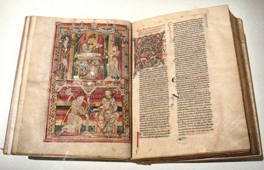
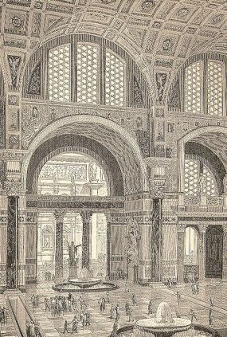
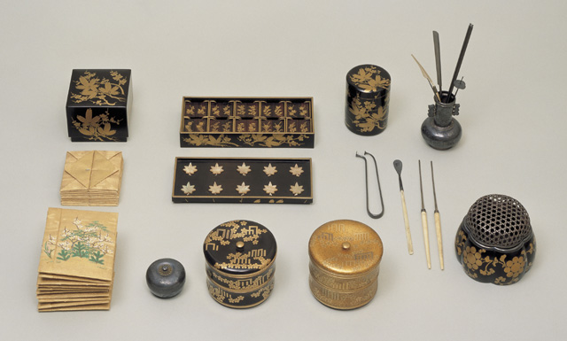

| 〔新版〕図説 アロマテラピーの歴史 | |
| 山崎 なつ子 | |
| (2017) | |
「〔新版〕図説 アロマテラピーの歴史」
山崎 なつ子 著
目次
古代～アロマテラピーの源流～
古代エジプト
古代メソポタミアやエジプトでは、神々にささげるものとして、乳香（フランキンセンス）などの香りが重視されました。香りが祈りや感謝を神々のもとに届け、よい香りが神々を喜ばせると考えていたからです。乳香や没薬といった香料はエジプトでは産出されなかったため、遠い産地と交易して手に入れる貴重品でした。
宗教儀式では、香木を火にくべて焚いたり（焚香、ふんこう）、燃えにくい素材と混ぜて燃やし、くゆらせて使いました [i] （薫香、くんこう）。英語で香料や香水、芳香を 「 Perfum e 」といいますが、これはラテン語の「煙 （ fumu m ）」を「通じて （ pe r ）」匂うという意味からきており，現代の香料の起源が古代の焚香料からであることがわかります。古代エジプトでは、花や樹脂で香りをつけた香油・香膏（香りのする軟膏）には神々との交信の媒介物、死者の体を守るもの、来世の再生の旅への必需品という役割があり、宗教儀式の際には香油・香膏を塗って、香りで身を清めることもありました。
香料は、最初は宗教儀式だけに使われていましたが、徐々に王や貴族が医療や美容、おしゃれやもてなしとして香料を使うようになっていきました。
図 1 ．香油を捧げるエジプトの神官
図 2 ．ユリを布に入れて絞り、香りを抽出する作業の様子（紀元 前4 世紀）
図 3 ．宴の様子（ネプアメンの墓の壁画、紀元 前 135 0 年頃）
演奏する女性の楽士と音楽に合わせて踊る裸体のダンサー。頭にのせているのは香りのついた練り香だが、実際このように使用したのか、香りを使ったという象徴的な表現なのかは議論がある。右にあるのはワイン壺。
図 4 ．乳香（フランキンセンス）
古代の香料の中で特に知られるのが、乳香（フランキンセンス）と没薬（ミルラ）です。乳香は、フウロソウ目カンラン科ボスウェリア属の樹木、モツヤクジュなどから分泌される樹脂で、古代オリエントでは「乳香は神、没薬は救世主、黄金は王」と言われ、黄金より貴重と考えられていました。燃やすと黒い煙を出しますが、火が消えると優雅で心を落ち着かせる香りを放ちます。
別名のフランキンセンスは、真正純粋（フランク）な香煙（インセンス）を意味しています。
図 5 ．乳香がとれる木
ニュウコウジュは、アラビア南部やアフリカ東北部産地の名産品です。香料の産地は「幸多きアラビア」と呼ばれていました。
図 6 ．ツタンカーメン王のミイラ
古代エジプト人は死後の世界とよみがえりを信じていたので、魂が帰ってきたときの入れ物として、遺体に防腐処理をほどこして保存しました。ミイラには没薬（ミルラ）やシナモンなど、防腐作用のある香料が使われました。「ミイラ」ということばは「ミルラ」に由来しています。乳香はミイラ作りには使われませんでした。
図 7 ．没薬（ミルラ）
没薬は、フウロソウ目カンラン科コンミフォラ属の樹木、ミルラノキなどからとれる樹脂です。古代エジプトでは、神々への捧げもの、ミイラ作りの他に、芳香軟膏、油やお酒の香り付けにも使われていました。没薬や乳香は、漢方薬としても古くから知られ、日本のお香にも使われます。
図 8 ．没薬を採取する様子
乳香や没薬などの樹脂は、木に傷をつけ、にじみ出た樹脂が固まったものを採取します。没薬がとれるモツヤクノキは、主に東アフリカのソマリアに生育します。
ソロモン王とシバの女王の伝説
図 9 ．ソロモン王とシバの女王の会見（ステンドグラス、エチオピアのホーリー・トリニティー大聖堂）
（ソロモン王とシバの女王は検定には登場しません）
香料に関する伝説として、キリスト教の『旧約聖書』に登場するシバの女王がよく知られています。シバの女王は伝説の女王で、香料を産出する豊かな国を治めていたといわれます。女王の国の位置はエチオピアやイエメンあたりという節もありますが、よくわかっていません。『旧約聖書』には、シバの女王がイスラエル王国のソロモン王を訪問したエピソードが、次のように語られています。
シバの女王はソロモン王の名声を聞き、王を訪れて難問を出して試します。ソロモン王は女王のすべての問いに答え、女王はその知恵と豊かさに圧倒され、白檀などの高価な香料、金などの宝物を贈りました。
この時ふたりの間にできた子どもが、のちにエチオピアの王になったともいわれています。
古代ギリシャ
古代ギリシャの人々は、希少な香りは神々のもとから来たと考え、神々に香をささげ、花や香りを好み、詩にうたいました。ギリシャ神話には花やハーブに関するエピソードも多く残されており、バラは美の女神アフロディーテとともに生まれたと言われました。
古代ギリシャでは医学が発展し、香料植物も治療や燻蒸に活用されました。スミレやユリ、バラの香りのする香油や香膏も愛用され、アテネのソロンはあまりの流行に、アテネの男性たちに香油を売ることを禁止しましたが、それでも大いに利用されていました。
マケドニアのアレキサンダー大王がギリシャを征服して東洋の習慣を広めると、神々に捧げる薫香や個人が使う香油・香膏はますます広まっていきました。ギリシャの人々は、入浴後は垢すりを使い、体液の流れをよくするためにマッサージを行っていました。化粧やマッサージ、治療用には様々な油がありましたが、良質なオリーブ油も使われていました。
｢医学の父｣ヒポクラテス
図 1 0 ．ウィーンの薬局の看板（１９世紀オーストリア。左から、健康と衛生の女神ヒュギエイア、古代ギリシャの医師ヒポクラテス、花と豊穣の女神フローラ、古代ローマの医師ガレノス）
古代の医学では、病気は悪霊や天罰と考えられ、神に祈りを捧げたり呪術で病気を治そうとしました。古代ギリシャの医師たちは、それまで医学を迷信や呪術から切り離し、臨床と観察を重んじる経験科学へと発展させました。その代表が「医学の父」といわれる医師ヒポクラテス（紀元 前 46 0 年頃 - 紀元 前 37 0 年頃）です。古代ギリシャの医師たちの研究は、ヒポクラテスの死 の 10 0 年ほど後に、『ヒポクラテス全集』にまとめられました。ヒポクラテスが属したコス派の他にも、様々な学派の医師たちの論文が収録されています。
ヒポクラテスは自然治癒を重視し、数種類ある体液のバランスが崩れると病気になると考えました。また、人間の置かれた環境が健康に影響すると考え、環境や食事、運動、ふだんの生活の大切さを説きました。ハーブなどの香料植物も治療に使われ、これらを燻（いぶ）して行う燻蒸（くんじょう）や入浴も勧めました。紀元 前 43 0 年に起こった「アテネの疫病」と呼ばれた伝染病の大流行の際には、大きなかがり火を焚いて街を消毒し、人々を救ったという伝説も残されています。
「植物学の父」テオプラストス
図 1 1 ．テオプラストス『植物誌』の口絵 （ 1 7 世紀）
テオプラストス（紀元 前 37 1 年 -- 紀元 前 28 7 年）は、大哲学者アリストテレスの友人であり弟子で、幅広い研究を行いました。テオプラストスという名は、アリストテレスが彼の語りの上手さからつけたあだ名で、｢神のごとく語る｣という意味です。
ほとんどの著作が失われてしまいましたが、植物に関する『植物誌』は現代まで伝わり、その先駆的な研究から｢植物学の祖｣と呼ばれています。テオプラストスは、多くの植物を観察して詳細に研究しました。それぞれの植物の特徴をとらえ、その特徴にそって「高木」「低木」「小低木」「草木」に、されにそれらを栽培種と野生種に分類し、植物学の基礎を作りました。
『植物誌』はラテン語に翻訳され、ヨーロッパで広く読まれました。香料植物も多く収録され、美容や医療に使う方法が説明されました。当時はまだ植物を蒸留して精油を取る技術は広まっておらず、香りのある植物や樹脂、動物性香料をすりつぶして粉末にしたり、ワインや油に付け込んで香りを移して使いました。
アレクサンドロス大王の東方遠征と東西文化の交流
図 1 2 ．マケドニア軍と戦うアレクサンドロス大王（ポンペイの壁画）
（アレクサンドロス大王は検定には登場しません）
アレクサンドロス大王・アレキサンダー大王の名で知られるアレクサンドロス三世は、マケドニア王国という小さな国の王でしたが、東方の大帝国アケメネス朝ペルシャを滅ぼし、中央アジアからインド北西部まで征服し大帝国を築きました。アレクサンドロス大王が東を目指した理由は、貴重な香料を手に入れるためだったともいわれています。
この遠征で東西の人と文化が交流し、東と西の文化が融合してオリエント文化が生まれます。ハーブや香辛料の交易も盛んになり、医学や錬金術（化学）、占星術（天文学）も発展しました。
図 1 3 ．アレクサンドリア図書館のイメージ
（アレクサンドリア図書館は検定には登場しません）
アレクサンドロス三世は、エジプトに港町アレクサンドリアを建設しました。そしてアレクサンドロス三世の死後、部下のプトレマイオスがエジプトを統治しました。（女王クレオパトラは彼の子孫です。）
アレクサンドリアには、アレクサンドリア図書館と呼ばれた歴史に残る巨大な図書館がありました。世界中の書物を集めた図書館で、『ヒポクラテス全集』は、ギリシャ医学の文献を集めてここでまとめられたといわれています。
アレクサンドリア図書館には研究所や薬草園もあり、多くの学者が集い、医学も進歩しました。インドなどの東洋の香料は、アレクサンドリアを通ってエジプトに持ち込まれました。
香りを活用した女王クレオパトラ
図 1 4 ．クレオパト ラ7 世（紀元 前 4 0～ 3 0 年頃）
（クレオパトラは検定には登場しません）
古代に香りを活用した女性として、古代エジプト最後の女王クレオパトラ（クレオパト ラ7 世）がよく知られています。エジプトとギリシャの豊かな文化を受けつぐ才女で、とても魅力的な女性だったといわれています。当時の歴史家は、「打ち解けて話をする時、彼女が発揮する優雅な魅力は、生来の優しさとあいまって、言葉や仕草に趣を添え、刺激的な誘惑に満ちていた」と記録を残しました。
ローマ帝国の基礎を築いたカエサルやアントニウスを魅了しましたが、洗練されたエジプトの香り文化は、クレオパトラの魅力を引き立てたことでしょう。当時は焚くお香（焚香）と身体に塗る香油が一般的に使われましたが、香油には肌を保護する効果もありました。
クレオパトラが愛用していたのは、官能的な動物性香料・麝香（じゃこう、ジベット） [ii] や、植物性香料の菖蒲（しょうぶ、カラムス）、肉桂（にっけい、シナモン）、没薬などをブレンドした「キフィ」で、薔薇の香りのする風呂に入っていたといわれています。
古代ローマ
古代ギリシャの医学・薬学は、アレクサンドリアの図書館に集められ、古代ローマ世界に受け継がれました。ギリシャ人の医者が活躍し、ギリシャ人のディオスコリデス、ガレノスが後世に名を残しました。また、大博物学者プリニウスがまとめた『博物誌』には、香料や薬も広く取り上げられています。古代ギリシャ・ローマでは、香りは香り水、香油化粧パウダー、香膏そして焚香の形で使われました。金持ちのためには香料店があり、輸入された貴重な香料が高値で販売され、金持ちの人は香りをまとい楽しみました。また、人だけでなく住居や調度も細心に良い香りで彩られ、犬や馬なども主人と同じように香りを付けられることもあったようです。宴会や料理、ワインにも香りが使われ、客人のちょっとしたもてなしにも香がふるまわれました。
ハーブが広まるうえでも古代ローマは大きな役割を果たしました。西ローマ帝国は西アジアにも近く、非常に大きな国だったので、ハーブが広まるうえで大きな役割を果たしました。南ヨーロッパ産のハーブは、ローマ帝国滅亡後も各地の修道院や荘園で寒さに順応しながら、ゆっくりと北に伝わっていきました。
「薬学の父」ディオスコリデス
ローマ帝国のギリシャ人医師ディオスコリデス （ 4 0 年頃 - 9 0 年）は、偉大な本草書（薬草の本）『薬物誌』（ラテン 語 : De Materia Medica libriquinqu e ） 全5 巻を書いた人物です。『薬物誌』は、日本では「マテリア・メディカ」という通称でも知られています。ディオスコリデスは、ネロ帝時代に軍医として広く旅し、各地で実際に見て使った薬草や鉱物をまとめました。
ディオスコリデスは広く情報を集め、『薬物誌』 で 1,00 0 種類近い薬を扱っています。うち植物薬が一番多 く 60 0 種類、鉱物 約 9 0 種類、動物薬が 約 3 5 種類です。構成は次のようになっていました。
第1 巻：香料、香油、軟膏、樹脂、樹皮、果実を産する草木
第2 巻：動物、動物の乳、蜜、脂肪、穀物、食用野菜
第3～4巻: 薬草、種子類
第5 巻：酒精類、鉱物類
『薬物誌』には植物名、別名、判別法、調製法、貯蔵法、薬効、適応、用法、用量が記載されており、ショウガやコショウといったアラビア産の薬用植物も収録されました。朱から水銀を作る方法や酢酸鉛、石灰水の製法なども書かれた科学的な薬物書でもあります。
古代では生薬と植物香料・動物香料は一体として考えられており、香料の研究と製造は、薬の研究であり、医薬品製造の一部と考えられていました。ディオスコリデスも香料の治療効果を高く評価し、「香油・香膏（香りのする軟膏）は衆知のように、他の薬物と配合したり、滴下したり注入したり、匂いをかいだりすれば、ある種の病気に効果的である」と述べています。これは現代のアロマテラピーそのものだといっていいでしょう。 第1 巻では、香料植物や香油・香膏、香りのよい樹脂などの薬効や使い方が紹介され、香料・薬品・食品の区別のつかないレシピが数多く収録されています。
香料を油やワインに漬けこんで香りを移して利用し、香料植物はギリシャと同じように、ワインにつけて香りを移したり、香油や香膏の形で使われました。精油が一般的になるのは、化学（錬金術）が発達した中世アラビア以降になります。
『薬物誌』は迷信を排除した合理的で実用的な本草書で、ヨーロッパ・アラビアで 、 150 0 年以上薬学の最高の文献として使われていました。
図 1 5 ．『薬物誌』の「ウィーン写本」 （6 世紀前半）
多くの写本が作られましたが、一番古いものとしては、ビザンツ帝国 で 51 2 年頃作られた「ウィーン写本」（コンスタンティノープル写本）が知られています。滅亡した西ローマ帝国の皇女で、ビザンツ帝国に亡命した貴婦人アニキア・ユリアナに献上された羊皮紙製の豪華な写本です。もともと『薬物誌』には植物の図版はありませんでしたが、「ウィーン写本」には 約 40 0 の美しい植物画がつけ加えられました。植物画の多くは、古代ギリシャのクラテウアスの絵を模写したものと考えられています。ウィーン写本にはディオスコリデス以外の文章も収録され、その中には今で言う迷信もあります。
この写本は 、 1 6 世紀にオーストリア皇帝が購入し、ウィーン宮廷図書館に収蔵されたため「ウィーン写本」と呼ばれています。日本では、明治薬科大学の資料館にレプリカが展示されています。
ローマの香料好みと皇帝ネロ
図 1 6 ．プリニウスが「プラエネステのバラ」とよんだローザ・ガリカ（ピエール＝ジョゼフ・ルドゥーテ『バラ図譜』より）
（ネロは検定には登場しません）
ローマ人もギリシャ人同様香りを愛し、宴会の飾りや飲食物、儀式に使いました。特にバラが好まれ、バラの香りのお酒や香油も使われていました。ある皇帝は、宴会で客人に薔薇の山を落とし、窒息死させてしまったという逸話も残されています。
プリニウスが仕えた皇帝ネロは、ぜいたく好きの暴君として名を残した人物で、バラ好き・香料好きとしても知られて、宴会場をバラの花で埋め尽くすほど飾り、天井にパイプをしつらえて香りを付けた水を客に振りまきました。妻のポッパエアの葬式では、当時の香料生産国アラビアの産出 量 1 0 年分を使ったといわれています。
皇帝ネロだけでなく、歴代皇帝やローマ市民の香料好きは大変なもので、あまりにたくさん香料を使うので、宗教儀式用の香料が足りなくなるほどだったそうです。支払いに使う銀がどんどん流出してしまい、ローマ帝国の力が弱る一因にもなりました。
博物学者プリニウス

図 1 7 ．プリニウス『博物誌』の写本 （ 1 2 世紀）
古代ローマのガイウス・プリニウス・セクンドゥス （ 22 / 2 3 年 -- 7 9 年）は、大自然や人の文化、芸術など、世界のあらゆることに興味をもち、自然界の歴史を網羅する史上初の書籍『博物誌』（ 全 3 7 巻）をまとめました。
プリニウス自身が見たことだけでなく、他の人の著作からの引用や伝聞もあり、事実と伝説が混ざった風変わりな書物です。ドラゴンやユニコーン、半魚人など、架空の生き物も紹介されていて、当時のローマでは実在すると思われていたことが分かります。植物や薬草、香料や医学も取り上げられており、後世に大きな影響を与えました。
ローマの風呂

図 1 8 ．古代ローマのカラカラ浴場（紀元 前3 世紀）の内部の想像図
古代ローマ人は、日本人に負けずおとらず風呂好きで、都市政策の一環として遠くから水道がひかれ、皇帝がテルマエと呼ばれる公衆浴場を建設しました。（当時の様子は、ヤマザキマリのマンガ『テルマエ・ロマエ』で見ることができます）大浴場だけでなく小さな浴場もあり、市民は先頭に通った江戸っ子のように、毎日テルマエに通っていました。テルマエの内容は規模によって違いますが、温水・冷水風呂、サウナや運動するための球戯場、図書館が併設されているものもあり、市民の社交の場になっていました。テルマエには、金属のヘラを使った垢すりや、香油を使ったマッサージのサービスもありました。ローマの浴場では、入浴前に運動して汗を流し、体に油を塗って汚れを落とします。その後風呂やサウナを楽しみ、余裕があれば奴隷にマッサージさせ、香油を塗らせました。テルマエの利用者はほとんどが男性で、女性は利用しなかったようです。
西洋医学に君臨したガレノス
図 1 9 ．『薬物誌』の「ウィーン写本」より、名医たち。上段中がガレノス、右がディオスコリデス
古代ギリシャ・ローマの医学は、ローマ時代のギリシャ人医師ガレノス （ 12 9 年頃 - 20 0 年頃）によって整理され、体系化されました。ガレノスの医学は非常によくまとまっており、西洋ではルネサンスま で 150 0 年以上、絶対的な権威として医学の世界に君臨しました。
ガレノスは、「自然界に目的のないものはない」というアリストテレスの思想（目的論 [iii] ）をベースに、ギリシャ・ローマ医学を整理しました。ヒポクラテスを高く評価し、人間に は4 種類の体液があり、そのバランスが崩れることで病気になると考えました。自然治癒を重視しましたが、ヒポクラテスより積極的に薬を使い、さまざまな形の薬を作りました。水と油からつくるコールドクリームも、ガレノスが考案したといわれています。ガレノスの薬の処方は長く伝えられ、現代でも植物を使った簡単な自然素材の薬は「ガレノス製剤」と呼ばれています。
アレクサンドリアでは人体解剖が行われましたが、当時のローマでは許されなかったので、ガレノスは動物解剖を行い、そこから人間の体の仕組みを推測しました。（キリスト教世界では人体解剖は禁止されたので、古代ローマからルネサンスまでほとんど行われませんでした。）
ガレノスはいくつか解剖学上の新しい発見をしましたが、動物解剖からの推測だったこともあり、部分的には間違いもありました。ガレノスがまとめたギリシャ・ローマの医学は、ローマ帝国滅亡後ヨーロッパから失われ、アラビアに伝わりました。
『新約聖書』の香りの逸話
図 2 0 ．幼子イエスに会う東方の三博士 （ 1 7 世紀スペインの絵画）
（「聖書と香り」はコラムになっており、検定の範囲外です）
キリスト教の聖典『新約聖書』は 、1 世紀の終わりか ら4 世紀頃にまとめられました。キリスト教で「救い主」とされたイエス・キリストの生涯を中心に語られており、誕生のエピソードはクリスマスの劇としてよく上演されます。
『新約聖書』には、イエスが生まれた時に空に星が輝き、それを見た東方 の3 人の博士（賢人、マギ）が訪ねてきたと書かれています。彼らはイエスに黄金・乳香・没薬を捧げました。香料の乳香と没薬は聖なるものと考えられており、黄金と同じくらい重視されていたことが分かります。
図 2 1 ．イエスの足にナルドの香油を注ぎ、髪でふくベタニアのマリア （ 1 5 世紀）
また『新約聖書』には、イエスが十字架にかけられる前、ベタニアのマリアという女性が「ナルドの香油」でイエスの足をぬぐったというエピソードがあります。古代、油には特別な意味があると考えられており、宗教儀式や王の誕生の儀式に使われました。
キリストが生きた場所は中東の乾燥地帯でしたが、当時の服はシンプルなもので、靴も簡単なサンダルだったため、太陽や砂塵から肌を保護するためにも油が利用されていました。人の足を洗うのは奴隷の仕事だと思われていたので、マリアの行為は常識はずれなものでした。このエピソードは、イエスがキリスト（メシア＝油を注がれし者、救い主）として祝福されること、また近い将来の死を暗示しています。
ナルドの香油はとても高価なものでしたが、これはチベット地方原産のスパイクナルド（甘松香）の浸出油とも言われます。また、ナルドと呼ばれていたスパイク・ラベンダーだと考える人もいます。
古代中国
中国を中心とする東洋でも独自の医学が発展し、『薬物誌』のような本草書がまとめられました。最古のものは漢の時代にまとめられた『神農本草経』で 、 36 5 種類の薬が扱われています。神農というのは中国の伝説の神で、漢の時代に、古代中国の伝説の帝王・炎帝（えんてい）と同一視されるようになり、農耕と医療の神としてあがめられるようになりました。神農はたくさんの植物を食べて体への影響や毒の有無を見極め、人々に使い方を教えたと言われます。
『神農本草経』の原本は失われてしまいましたが 、 50 0 年に南朝の陶弘景が再編纂したものが伝わっており 、 73 0 種類の薬や治療法が収録されました。
図 2 2 ．李時珍『本草綱目』 （ 1 6 世紀、明）
（『本草綱目』は検定に取り上げられていません。）
明の時代には、ディオスコリデスの『薬物誌』とも比較される本草書、李時珍 （ 151 8 年 - 159 3 年）の『本草綱目』 （ 157 8 年）が書かれました。 全 5 2 巻にのぼる大著で 、 1,89 2 種類の薬が収録され、う ち 37 4 種類は新しいものでした。図 版 1,10 9 枚、処 方 11,09 6 種にのぼり、正しい名称や産地、それまでの書籍での間違いの修正、薬の作り方などが説明されています。
『本草綱目』は、中国医学の本草書で最も充実しているといわれ、日本にも輸入され漢方（日本の医学）に影響を与えました。中国の本草書は中世アラビアにも伝わり、アーユルヴェーダの本などと同様にアラビア語に翻訳されています。
中国の医学は、中国とその周辺、朝鮮半島、日本、ベトナムなどで行われ、それぞれの地域で発展していきました。日本では漢方医学となり、中国では、中華人民共和国が中国各地の医療を整理し、中医学の名で体系化しました。
古代インド
図 2 3 ．インド神話に登場する医神ダンヴァンタリ。アーユルヴェーダの始祖とされるブラフマー神の化身。
『アーユルヴェーダ』は、現在もインドやスリランカで行われる伝統医療です。寿命、生気、生命を意味するサンスクリット語の「アーユス」 （ आयुस ् ）と知識、学を意味する「ヴェーダ」 （ वे द ）を組み合わせた言葉で、アーユルヴェーダには病気の治療・予防だけでなく、宇宙観、自然観、死生観を含む広い哲学で、より良い生命を目指す思想です。健康の維持・増進や若返り、さらには幸福な人生、不幸な人生とは何かということまで追求します。治療には、薬草（ハーブ）や鉱物を使った内服薬や、香油を使ったマッサージ、食事指導や生活指導も行われます。
古代インドでは、自然神を崇拝するバラモン教が広まり、『リグ・ヴェーダ』（紀元 前 1 5 世紀 頃? ）などの４つの経典（ヴェーダ）がまとめられました。ヴェーダから生命に関する知識を集大成した副ヴェーダが『アーユルヴェーダ』です。ひとつの体系としてまとめられたの は 300 0 年以上前、早くても紀元 前5～6 世紀と考えられています。
アーユルヴェーダで使われる香辛料や香料は、仏教とともに日本に伝わりました。奈良の正倉院には、大陸から伝わったアーユルヴェーダの薬が収められています。
アラビア・イスラム世界
図 2 4 ．ヨーロッパ風衣裳のイブン・シーナー（右）とヴィラノヴァ（左） （ 1 5 世紀ドイツの本草書より）
古代ギリシャ・ローマ世界で発達したヘレニズム文化、医学や科学技術は 、 48 0 年に西ローマ帝国が滅亡すると、西ヨーロッパでは異教の文化として激しく迫害され、アレクサンドリア図書館も破壊され、すっかり衰退してしまいました。学者たちはビザンツ帝国（東ローマ帝国）や中東のアラビア世界に逃れ、西洋文化の中心はアラビア・イスラム世界とその周辺の地中海地域に移ります。アッバース朝などのイスラム教の帝国が支配したアラビアとその周辺では、東西の文物を取り込んで文化や技術が発展しました。精油を抽出する水蒸気蒸留法もアラビア世界で確立し、ギリシャ・ローマの医学もさらに発展しました。
イスラム王朝のアッバース朝の時代は、平和だったおかげで貿易も盛んになり、世界中のハーブや香辛料が使われるようになりました。アーユルヴェーダの薬も導入されています。豊かな香り文化があり、様々な香料がアラビアに集まりました。
アラビアでは医学も発展し、高名な医者が多く活動していました 。8 世紀ごろの医師ゲーベルがアラビア錬金術を初め、蒸留器アンビークを考案したと言われています。哲学者・錬金術師でもあった医師イブン・シーナーは、西洋でもっとも有名な医学書『医学典範』 全5 巻を書いた偉大な人物で、ヨーロッパではラテン語のアヴィセンナという名で知られています。（当時ヨーロッパでは、偉大な人物は尊敬を込めてラテン語名でよばれていました。）当時の学者はジャンルを絞らず広く研究を行い、イブン・シーナーも医師であると同時に哲学者でもあり、薬学、天文学、数学などでも業績を残しました。研究していたアリストテレス哲学をいかして古代ローマのガレノスの医学を体系化し、わかりやすくまとめました。薬に関する部分は、ディオスコリデス『薬物誌』をベースに東西の薬を取り入れています。彼は治療に芳香蒸留水や精油を使ったといわれますが、これは当時のアラビアでは一般的なことでした。
ガレノス医学は中世アラビアで発展し、地中海のサレルノ医学校などを通してヨーロッパに受けつがれました。『医学典範』は 、 1 3 世紀にラテン語に翻訳され て Cano n （カノン）と呼ばれ、ヨーロッパで は 1 7～ 1 8 世紀くらいまで大学の教科書に採用されており 、 1 9 世紀まで治療に活用されました。
錬金術と蒸留技術
図 2 5 ．タクシラ遺跡で発見された素焼きの蒸留器
（ BY Evidence for the earliest distillation of sugar? Rum Histor y ）
（「錬金術と蒸留技術」はコラムになっており、検定の範囲外です）
アロマテラピーでは、香料植物を水蒸気蒸留して作る揮発性の油「精油」や、香料植物といっしょに蒸留した水「芳香蒸留水」（ハイドロゾル）を使います。アロマテラピーにとって、水蒸気蒸留の技術は重要なものです。
蒸留がいつ頃、どこで始まったかには議論があります。パキスタンのタクシラ博物館には、タクシラ遺跡で発見された素焼きの蒸留器が収蔵されており、紀元 前6 世紀～紀元 前5 世紀のものと考えられています。古代ギリシャのアリストテレス（紀元 前4 世紀）はワインの蒸留について書き残し 、4 世紀のエジプトの錬金術師ゾシモスも蒸留を行いましたが、水蒸気蒸留が広く行われるようになるのは、もっと後の時代になります。
水蒸気蒸留の技術は、イスラム世界で錬金術と深く結び付いて発展し、純粋な化学物質を簡単に得る手段として重宝されました。錬金術は現代ではオカルトの一種だと思われていますが、化学は錬金術を経て誕生しました。錬金術は紀元 前3～3 世紀頃古代エジプトで始まり、様々な技術を生み出しました。古代の人々にとって錬金術は神聖な術で、金属の精製や加工、染色やガラス製造、蒸留、建築など、すべての技術は「人間の技（わざ）」ではなく、｢神の技｣と考えられていました。錬金術師たちは、完全な金属である金や、不老不死・完全な健康をもたらす万能薬（エリクシル、エリクサー）の製造を目指して研究しました。錬金術師・化学者・薬剤師は区別されていませんでしたし、薬剤師は香料を扱っていたので、調香師でもありました。この辺りは、職分のきっちり分かれている現代とはかなり異なっています。
錬金術はアラビアに伝わって発展し、その後ヨーロッパに伝わりました。植物の精髄（エッセンティア）である精油や、ワインを蒸留したアルコール度数の高い蒸留酒も、錬金術によって生まれました。「アルコール」の「アル」はアラビア語の定冠詞で、「アルカリ」、「アルケミー」（錬金術、化学）、「アランビック」（蒸留器）なども同じくアラビア語が語源のことばです。
イスラム世界では 、8 世紀の終わりか ら9 世紀の初頭にバラを水蒸気蒸留して作る芳香蒸留水・バラ水の製造が確立され、広く生産されるようになりました。蒸留装置を改良した人物として 、8 世紀の錬金術師ジャービル・イブン＝ハイヤーンの名が知られていますが、誰が発明したのかはわかっていません 。 1 3 世紀まで様々な本に水の生産方法が記されました。
バラ水はアラビア語ではマー・アル＝ワルド、マーワルドと呼ばれ、動物性香料の麝香（じゃこう） と共に使われることが多かったようです。芳香蒸留水で顔や手足を清めたり、客人のもてなしに使ったり、バラ水を地面や壁にまくこともあり、こういった習慣は今も中東世界に受け継がれています。飲み物として、薬として、料理の香り付けにも日常的に使われました。バラ水に砂糖や蜂蜜を混ぜた飲み物「ジュラープ」も愛好され、これがジェラードのもとになったと言われています。
オレンジ（ナーランジュ）の花を使う橙花水（オレンジフラワーウォーター）、しだれ柳（ヒラーフ）の花や実をから作った柳花水も、バラ水と並んでイスラム世界で愛された芳香蒸留水です。
アラビアの進んだ蒸留法は、ヨーロッパに伝わってさらに発展しました。アルコールの蒸留は、ヨーロッパ で 1 1 世紀頃に行われるようになりました。
さらに 、 1 3 世紀の錬金術師・医師アルナルドゥス・デ・ヴィラノヴァが、薬草（ハーブ）や樹脂、香辛料や花をアルコールと共に蒸留して薬用酒を作り、「ハンガリー王妃の水」などの香りのいい蒸留酒が作られるようになりました。これがのちに香水とリキュール発展します。
図 2 6 ． 水蒸気蒸留の装置アンビークの断面図（ディマシュキー『時代の精華』写本 、 1 4 世紀）
（ BY History Of Science And Technology In Islam ）
図の中央の蒸気窯を加熱すると、花弁の入っ た8 つのヒサゴ形の蒸留瓶「カルア」が蒸され、その中の蒸気が壁の外に突き出た蒸留器「アンビーク」に貯まる。外気で冷やされると水蒸気は液化し、アンビークの下の受け器「カービラ」に集められる。このような装置でバラ水は大量生産された。
図 2 7 ．バラ水入れ （ 1 2 世紀イラン）
中世ヨーロッパの僧院医学（修道院医学）
53 1～ 58 0 年 の 5 0 年にヨーロッパ・北アフリカを疫病が何度も襲い、疫病になすすべもなかった医師に替わって、修道士たちが医療を担うようになりました
中世ヨーロッパは、キリスト教とその価値観に覆われた世界でした。教会が大きな影響力を持ち、イタリアなどの修道院にはアラビア世界の知識が伝えられ、修道士たちが文献を翻訳し、写本を作りました。修道院には古代ギリシャのディオスコリデスの『薬物誌』の写本が伝えられ、庭園では『薬物誌』の薬草が栽培されました。修道士たちは病人の治療を行い、修道院にはしばしば病院が併設されていました。このような修道院の医療活動はイタリアで盛んで、今日では僧院医学（修道院医学）と呼ばれることもあります。（ちなみに、ナイチンゲールが見た医療現場がひどい状況だったのは、イングランド王ヘン リ8 世が伝統的に医療を担っていた修道院を解散させてしまったためです。イングランド以外のヨーロッパの医療の状況はあれほど悪いものではありませんでした。）
修道士や修道女には、医療関連で名前を残した人物もいます 。 1 2 世紀ドイツの修道女ヒルデガルト・フォン・ビンゲンは、薬草や医学についての本を書き残しました。ヒルデガルトは女性であり、男性修道士のようにラテン語が読めなかったので、ラテン語で伝えられたギリシャ・ローマ医学より、ドイツの民間療法の影響が大きいと言われます。
また、それまでラベンダーの種類はあまり区別されていませんでしたが、彼女は初めてコモン・ラベンダー（真正ラベンダー）をほかの種類のラベンダーと区別しました。アルコールベースの香水・薬酒「ラベンダー水」を発明したとも言われていますが、これは時代が合わないようです。
ヒルデガルドは神のヴィジョンを見る神秘家でもあり、音楽家でもあり、女子修道院長でもありました。長い間忘れられていましたが、現代になって再評価され、広く知られるようになりました。
中世ヨーロッパのハーブ文化は 、 1 4～ 1 5 世紀のイギリスのハーブ園で最高潮に達しました。ヨーロッパ、とくにアルプス以北は新大陸と交流するようになるまで野菜が乏しかったこともあり、当時のイギリスではサラダにはハーブが使われ、貴族の宴会に欠かせないごちそうとして喜ばれました。
イタリアのサレルノ医学校
図 2 8 ．サレルノ医学校での授業風景のイメージ （ 1 6 世紀）
109 6 年か ら2 世紀にわたり、ヨーロッパ諸侯による中東への侵略戦争（キリスト教側から見ると、イスラム勢力の支配下にある聖地エルサレムの奪還のための聖戦）である「十字軍」が起こりました。 第1 回十字軍では、イスラエルは十字軍による虐殺で血の海になったと伝えられています。
十字軍は軍事的には失敗し、ヨーロッパ勢がイスラエルを長く支配することはありませんでしたが、ヨーロッパ・アラビア間の交通が発達し、これを背景にアラビアの文化・技術は地中海の国々に伝わりました。古代ギリシャ・ローマのヒポクラテスやガレノスの本や、イブン・シーナーの『医学典範』などの医学書がヨーロッパに伝えられ、修道院でラテン語に翻訳され、医学校も開設されました。また、アラビア世界で発展した錬金術（科学技術）や、洗練された香りの文化も伝えられました。悪臭を消すために良い香りを付けた革手袋も伝えられ、フランスのグラースなどでは手袋製造業者によって香水が作られるようになります。
アラビアから伝わった医学は地中海で隆盛し、イタリアにはサレルノ医学校が、フランスにはモンペリエ医学校が作られました。サレルノ医学校は保養地として知られていましたが 、9 世紀ごろからヒポクラテスの町と呼ばれるようになり、医療組合が医学校を作り教育を行いました、サレルノ医学校 は 10~1 2 世紀に隆盛し、モンペリエ医学校 は 1 2 世紀には優れた医者がいたことが分かっています。これらの学校では、アラビアの進んだ医学が教えられました。
サレルノ医学校の創設者は「アラブ人」「ギリシャ人」「ユダヤ人」「サレルノのイタリア人」 の4 人だったと伝えられており、多様な文化・宗教が認められた自由な気風だったことがうかがえます。また、教師にはトロトゥーラという女性医師もいたといわれています。サレルノ医学校は修道院とつながりがあり、近くの修道院で翻訳されたアラビアの医学書が使われ、最新の医学が教えられました。サレルノ医学校には十字軍で怪我をした人々が運び込まれることも多かったため、外科も発展し、眼科や泌尿器科でも名をはせています。ヨーロッパでは直接の医療行為は下等な手仕事と考えられていたので、医者が診察で患者に手を触れることもなく、外科手術などは「床屋外科」と呼ばれる職人が行っていました。
蒸留酒と「アクア・ミラビリス」
図 2 9 ．中世の本草書にえがかれたローズマリー （ 150 0 年頃）
（アクア・ミラビリスは検定には登場しません）
アラビアから伝わった蒸留技術はヨーロッパで改良され、ワインから蒸留酒が作られるようになりました。火をつけると燃え、飲むとかだがあたたかくなる蒸留酒（アルコール）は、ラテン語で「アクア・ヴィテ」（生命の水）と呼ばれ、薬として珍重されました。蒸留酒を作る技術はとても難しいもので、秘伝として錬金術師や修道院に伝えられました。
1 4～ 1 5 世紀頃になると、イタリアやフランスの修道院で、ハーブや樹脂、香辛料や花をアルコールと共に蒸留して薬用酒を作るようになりました。今でいう養命酒のようなもので、ラテン語で「アクア・ミラビリス」（オー・アドミラブル、すばらしい水）、「エリクシル」（万能薬、霊薬）とよばれました。
図 3 0 ．グランド・シャルトルーズ修道院での蒸留風景が再現されたジオラマ
（ハンガリーウォーターはコラムで検定の範囲外です）
ハンガリー水（ローズマリー水、ハンガリアン・ウォーター）、ラベンダー水、メリッサ水、カルメル修道会がレモンバーム（メリッサ）・レモンの皮・ナツメグ・アンゼリカの根で作ったカルメル水、イタリアのサンタ・マリア・ノヴェッラ修道院の「女王の水」（アクア・デッラ・レジーナ）など、様々な「アクア・ミラビリス」がありました。メリッサ水はペスト予防に使われ、現在でも気付け薬として使われているそうです。気付け薬というのは、気分をシャキッとさせる薬のことで、他にハーブ酢も気付け薬として使われていました。
中でも人気があったのは「ハンガリー女王の水」ことローズマリー水です。老齢のハンガリー王妃エリザベトが、これを使って手足の痛みがなくなって若返り、年下のポーランド王に求婚されたと宣伝され人気となり、香りのいい薬・香水としてヨーロッパ中の宮廷で使われました。
「アクア・ミラビリス」は、飲むだけでなく、外用薬としても使われました。フランスでナポレオンが法律を改正するまで、薬用酒と香水はあまり区別されていませんでした。
また中世ヨーロッパの人々は、お風呂に入ると肌が弱ってペストにかかりやすくなると考え、あまり入浴しなかったので、水の代わりに体をふくためにも利用されました。
ペストの大流行
図 3 1 ．ポマンダーを持つ貴婦人 （ 1 6 世紀）
（ 「4 人の盗賊のお酢」はコラムで検定の範囲外です）
中世ヨーロッパでは、モンゴル軍の進撃に伴いペストという伝染病が大流行し、社会に大きな影響を与えました。この病気は死亡率が高く、罹患するすると肌が黒くなるため、黒死病と呼ばれました。当時は感染経路も防ぐ方法も分からず 、 1 4 世紀のヨーロッパでは、ペストの大流行で全人口の 約3 割が命を落としたといいます。
当時は、悪い空気（瘴気）のせいで病気になるという考え方があり、ハーブやスパイスを入れた匂い玉「ポマンダー」や、ハーブや香辛料、花を容器に入れて熟成させた｢ポプリ｣、お香やハーブ酢、ハーブやスパイスを使った燻蒸が病気の予防に使われました。現在はこういったものが病気除けに使われることはありませんが、オレンジなどの果実にクローブを指して乾燥させたポマンダーは、現在も手作りで楽しまれています。疫病の薬になると考えられた東南アジアの薬や香辛料を求めて、ヨーロッパ諸国は東南アジアを目指し、これが大航海時代に繋がります。
南フランスのトゥールーズ で 1 7 世紀にペストが流行した際、街で盗みを働いた盗賊は、セージ、タイム、ローズマリー、ラベンダー、ニンニクなどを漬けこんだハーブ酢で感染を防いでいたといわれています。このレシピは 「4 人の盗賊の酢」と呼ばれ、ペスト除けに広まりました。ペストはノミの吸血によって感染することが多かったので、ノミ除けの効果でペストにかかりにくかったのではないかと言われています。イタリアには 「7 人の泥棒の酢」と呼ばれる芳香塩（嗅ぎ塩） [iv] がありますが、これは 「4 人の盗賊の酢」と同じような成分が使われています。
1 4 世紀になると、ハーブや香辛料を使った蒸留酒「アクア・ミラビリス」（すばらしい水）、「エリクシル」（万能薬、霊薬）が、ペストに効く薬としてイタリアのサレルノなどで作られ、各地に輸出されました。ローズマリーはペスト除けの効果があるといわれていたので、「ハンガリー女王の水」（ローズマリー水）はペスト対策としても使われたのかもしれません。
ルネサンス～大航海時代
学問が一度衰退したヨーロッパでは、ギリシャ・ローマの文化を受け継いだアラビアの文物を取り入れながら、古典文化の復興を目指す運動が起こりました 。 1 4 世紀のイタリアで始まり、ヨーロッパ各地に広まっていきました。中国で発明された火薬・羅針盤・活版印刷（活字を使った印刷）がルネサンス期のヨーロッパに伝わって改良され、それまで死者を冒涜すると禁じられていた人体解剖も行われています。また、ルネサンスの時代には香料への関心が高まり、薬用植物の調査と研究が進み、医薬品に関する品質規格書である薬局方も多く出版されました。
中世ヨーロッパの料理は大量の香辛料を使ったので、ヨーロッパ人の生活には欠かせないものでした。香料や香辛料は東南アジアなどヨーロッパより東の地域で産出され、イスラム商人によって紅海を経て地中海に運ばれました [v] 。胡椒（コショウ）など大量に流通したものは供給が安定し、一般の人々も買える値段になりましたが、貴族やお金持ちの商人しか買えないような高級な香辛料も少なくありませんでした。香料・香辛料の貿易はイスラム商人とイタリアのヴェネツィア商人が独占しており、ヨーロッパ諸国は独自の貿易ルートを作って産地と直接取引したいと考えました。こうした需要と、羅針盤の改良などの遠洋航海技術の発達により、ヨーロッパが新しい航路を切り開く大航海時代が始まりました。ヨーロッパからアフリカ大陸の南を回ってインドに行くルートが確立し 、 1 5 世紀末にはアメリカ大陸の存在が知られるようになりました。アメリカ大陸からは、バニラやカカオ、チリ、トマト、ジャガイモなどの新しい植物がもたらされています。
コロンブスは、ヨーロッパから西に進めばインドに着くと考えました。当時のヨーロッパでは、地球が丸いということを疑う人はいませんでしたが、大きさについての意見はまちまちで、インドにつく前に餓死してしまうのではないかともいわれました。コロンブスの計算は間違っていましたが、運は彼に味方し、結果的にアメリカ大陸に到達しました。ヨーロッパはアメリカ大陸やアジアの香辛料生産地を植民地にして過酷な支配を行い、利益を吸い上げるようになりました。こうして得た利益で、ヨーロッパでは華やかな文化が花開いていきます。

図 3 2 ．大航海時代の帆船（復元）
活版印刷と植物学のルネサンス
図 3 3 ．レンベルト・ドドエンス著『クリュードベック』より、ヒヨス
（イギリス以外の植物学は検定では取り上げられていません）
1 5 世紀半ばになると、ドイツで金属の活字を組み合わせて本を印刷する「活版印刷」が行われるようになりました。それまでは、本は手で書き写す「写本」しかなく、とても貴重なものでしたが、活版印刷でずっと安く作れるようになりました。最初にヨーロッパで印刷されたのは聖書でしたが、ドイツでは薬用植物に関する書籍も印刷され、植物書のブームがおこります。植物やハーブについて研究され、広く読まれるようになりました。
薬用植物の研究者や薬剤師・ハーブや香辛料を販売する薬種商はハーバリスト（本草家）、薬用植物の本は「ハーバル」（本草書）と呼ばれていました。ハーバルには薬草だけでなく、一般の植物も掲載されており、植物名、外観、特質、効能などが記載されており、植物採取者や植物学者、医師や薬剤師たちの必読書でした。また、家庭で治療を行う主婦にとっても貴重な情報源になっていました。ハーバルには薬効だけでなく、爪や髪の染料、防虫剤、美顔に使われる植物などの女性必須のハーブ利用法もあり、家事に関する実用書の面もあったようです。ハーバリストたちは、ギリシャ・ローマ医学や象形薬効説（後述）、占星術や民間信仰による理論を持っていたようですが、はっきりした思想・体系によるというより、経験や見聞による知識に基づいて植物や動物、鉱物の薬効を記載し、図を入れて残しました。
出版された初期の植物の本は、古代ギリシャのディオスコリデス『薬物誌』の内容に植物の絵をそえたり、『薬物誌』に地元の植物を付け加えたものでした。しかし、アメリカ大陸で未知の植物がたくさん発見されたこともあり、『薬物誌』を超えて新しい植物学が始まります。それまでは、薬草（ハーブ）や毒草のように役に立つ植物以外は注目されませんでしたが、植物そのものが研究されるようになっていきました。
ドイツの初期の植物書では、植物の図も大きく変わりました。修道院では、薬草の知識は人から人に伝えられ、ハーバル（本草書）の植物図は薬草園の薬草を思い出す参考程度のものでした。そのため、写本の植物図は簡略化されて粗末になり、間違えて他の植物を使ってしまう事故もあったようです。写本の図は実際の植物を見て描くのではなく、先人の絵を写すことが多く、ウィーン写本の図も、古代ギリシャの医師クラテウアスの絵の写しだと考えられています。
1 5 世紀になると、人々は自分の目で自然を見るようになり、ハーバル（本草書）の中にも実物を見て描かれたものが出てきました。ドイツのオットー・ブルンフェルス （ 148 8 年 - 153 4 年）は、古代ギリシャのディオスコリデスの文章にリアルな植物の図を添えて出版し、ヒエロニムス・ボック （ 149 8 年 - 155 4年) は自分の目で植物の生態と分布を観察してまとめ、レオンハルト・フックス （ 150 1 年-- 156 6 年）はギリシャ・ローマの古典を参考に薬効を説明しつつも、植物の形に注目して薬草以外の植物も取り上げました。
ドイツの植物学の盛り上がりは各地に伝わり、フランドル [vi] のレンベルト・ドドエンス、マティアス・デ・ロベル、カロルス・クルシウスが、当時の三大植物学者として今日にも知られています。ドドエンスの植物書は江戸時代の日本に輸入され、大きな影響を与えました。
近世本草学（ハーバリズム）の頂点と言われるのが、スイスのギャスパール・ボアン （ 156 0 年 - 162 4 年）『植物対照図表』 （ 162 3 年）で 、 600 0 種類の植物が正確に記載され、その古今の名称が対照されています。植物学者に欠かせない本になり、リンネも活用しました。
イギリスの植物学
図 3 4 ．『本草書または一般の植物誌』より、コリアンダー
ヨーロッパ大陸のハーバル（本草書）の出版ブームはイギリスにも伝わり 、 1 6 世紀後半になると、イギリスでもハーバルや園芸書の出版が目立つようになります。イギリスでは、現在もルネサンス期のハーバリスト（本草学者）の名が知られており、イギリス最初の植物学者と言われるのが医師・牧師のウィリアム・ターナーです。彼はイギリス人で初めて植物を科学的に研究し、三部よりな る A New Herball （新本草書 、 1551 年 - 156 8 年）を英語で出版し、「イギリス植物学の父」と呼ばれました。彼はドイツのレオンハルト・フックスとも親交があり、大陸より遅れていたイギリスの植物学をある程度発展させました。
ジョン・ジェラード （ 154 5 年 -- 1611 | 161 2 年）はイギリスのハーバリストの中でもっとも有名な人物で 、 159 7 年に『本草書または一般の植物誌』 （ The Herball or Generall Hiftorie of Plantes . ）というハーバルを出版しました。彼の本業は床屋外科 [vii] で、趣味で植物やハーブを研究していました。『本草書または一般の植物誌』は、ドイツのレンベルト・ドドエンスの著作の英訳をベースに、植物の順番を並べ替え、ジェラードの庭やアメリカ大陸の植物を新しく付け加えたもので 、 1,48 0 ページに及ぶ大著です。精密な植物の絵の多くは、ドドエンスなど他の人の本から引用されています 。 1 6 世紀イギリスでもっとも有名なハーバルですが、他人の文献の盗用や内容の間違い、誤記の多さなど批判も多く、ジェラードの死後、薬剤師植物学者のトーマス・ジョンソンが改訂し、実用的で役立つ本草書として長く愛されました。

図 3 5 ．シェイクスピア『ハムレット』より。花飾りを持つオフィーリア （ 1 9 世紀）
ジェラードの本は、同時代のシェイクスピアにも影響を与えたといわれ、シャイクスピア作品には様々な花やハーブが登場します。上の絵では、悲しみのあまり正気を失ったヒロイン・オフィーリアが、イラクサ、ヒナギクなど花飾りを手にしています。花のイメージが彼女の心や物語の意味を暗示し、豊かに彩っているのです。ヒナギクは恋占いに使われましたが、死をあらわす花でもありました。
図 3 6 ．ジョン・パーキンソン『広範囲の本草学書』扉絵（旧約聖書の「エデンの園」）
『本草書または一般の植物誌』にならぶ近世イギリスのハーバルとして知られるのが、ジョン・パーキンソン （ 156 7 年 -- 165 0 年） が 164 0 年に出版した『広範囲の本草学書』 （ Theatrum Botanicu m 、「植物の世界」という意味）で、当時最も完全で美しい本草書だといわれました 。 1,68 8 ページに及ぶ大著で、地元イギリスの植物をふくめ 、 3,80 0 種以上の植物が掲載されています。
パーキンソンは、イギリスの国王チャール ズ1 世に仕えた薬剤師です。造園家としても有名で、アメリカ大陸の植物を収集していました。彼はイギリスのハーバリズム（本草学）の時代の終盤の人物になります。
占星術と外徴の理論
図 3 7 ．ニコラス・カルペパー 著 The English Physitian タイトルページ （ 165 2 年）
かなり毛色が違いますが、ニコラス・カルペパー （ 161 6 年 --165 4 年）も現在のイギリスでよく知られるハーバリスト・民間治療者です。イギリス初の一般人向けの医学の本、いわゆる「家庭の医学」を出版しました。それまで医学の本はラテン語で書かれ（ラテン語が読めるのは貴族と聖職者だけでした）、医学の秘密は医師が独占していましたが、カルペパーはこれを不満に思っていました。聖職者になるために大学で学んだカルペパーはラテン語が堪能で、医学書を読みとくことができました。
彼はラテン語能力を生かし 、 165 2 年に英語で一般の人向けの医学 書 The English Physitian （英語で書かれた療法）を出版しました。
この本は、ジェラードやパーキンソンの本よりずっと安く、身近なハーブを使って病気の治療ができる本でした。ハーブやハーブ酢、ハーブワイン、芳香軟膏や芳香蒸留水、精油などを使った治療法が書かれています。
カルペパーは医師たちに非難されましたが 、 The English Physitian は庶民に支持されてベストセラーになり、アメリカでも出版されました。
図 3 8 ．人体と黄道十二宮（天の星）の対応関係を示した図 （ 1 5 世紀フランス）
カルペパー の The English Physitian では、ハーブや人間の身体は、太陽や月、惑星といった天の星々の影響を受けており、それを理解して診断・治療するよう語られています。ヨーロッパ伝統医学では、占星術は近代まで医学の一部であり、大学では占星術が教えられていました。カルペパーのような占星術的な医学（医療占星術） は 1 7 世紀には衰え始めますが、完全に消えるのは先のことです。
また、キリスト教に覆われた中近世のヨーロッパでは、自然は神が作った「自然という書物」であり、自然を読み解くことで神を知ることができると考えられていました。（つまり、科学は神が作った世界を知るための研究だと考えられていたので、聖職者と科学者は特に対立していたわけでもありません。）植物の形には、何の病気に効くかを示す神のメッセージが秘められているとされ、葉がハート形のメリッサは心臓に、脳に似た形のクルミは脳の病気に効くと考える人もいました。レタスは根元をちぎると白い乳のような粘液が出ることから、母乳の出をよくすると言われ、ハーブの浸出液が血のように赤いセントジョーンズワート（聖ヨハネ草）は、けがの治療に有効とされました。この象形薬効説は、外見の特徴に本質が示されているという考えで、「外徴」（シグナトゥーラ signatur a ）の理論と言います。
カルペパーの時代には近代医学が始まっており、医療占星術や外徴の理論は医学の世界で下火になりつつありました。しかし、近代医学もまだまだ未完成なものだったので、ハーブ療法などの伝統療法も広く行われていました。占星医学や外徴の理論は、現代では迷信と思われていますが、歴史学の分野ではその時代をあらわす思想として関心を集めています。また現代のスピリチュアル系では、医療占星術や外徴の理論を信じて治療を行う人もいます。
中近世ヨーロッパにおける蒸留
図 3 9 ．ヒエロニムス・ブラウンシュヴァイクの蒸留の本より、蒸留の様子 （ 1 6 世紀）
（ブラウンシュヴァイクは検定には取り上げられていません）
ヨーロッパの錬金術師たちは、植物からその本質である「精髄」を取り出して薬として使おうと考えました 。 1 6～ 1 8 世紀頃は、「精髄」を取り出す方法として蒸留の研究が盛んに行われ、活版印刷が普及すると、蒸留や精油に関する様々な本が出版されました。香料の主流は、古代から使われた樹脂や動物性香料から、植物から抽出した精油に変わっていき、精油や芳香蒸留水の医療への利用が研究されました。ルネサンス期には、錬金術師・植物学者のヒエロニムス・ブラウンシュヴァイク （ 145 0 年 - 151 2 年） が Liber de arte distillandi de compositis . （ 151 2 年）を出版。これは「偉大な本」と呼ばれて高く評価され、ヨーロッパ中に翻訳され、蒸留の技術を大きく進歩させました。
図 1 7 ．蒸留室で休憩する家政婦（ハウスキーパー） [viii] 。 （ BY Regency Servants ~ Women in the Household | Austen Authors ）
左手前と左奥にあるのが蒸留器。上にはハーブがつりさげられている。テーブルには材料をすりつぶすためのすり鉢とすりこぎ。外にあるのは養蜂のハチの巣と思われる。
（貴族の女性の蒸留の仕事は検定には取り上げられていません）
領主の奥方などの貴族の女性は、修道院が行っていた領地の人々の治療の仕事を引き継ぎました。蒸留や調剤は高貴な女性の趣味・技能と考えられており、貴族の館には「蒸留室」や「蒸留小屋」という蒸留作業のための部屋が作られ、ここで女主人や侍女が芳香蒸留水（ハイドロゾル）などの薬を作っていました。ヨーロッパの芳香蒸留水の最盛期 は 1 8 世紀で、当時は 約 20 0 種類も使われていたと言われています。女性たちは薬やせっけんなどの手作りのレシピを書きつづり、互いにレシピを交換し合いました。
1 8 世紀中ごろになると薬は外で買うものになり、貴族の家での蒸留の仕事や蒸留室もなくなっていきました。
日本の蘭方への影響

図 4 0 ．水蒸気蒸留装置「らんびき」（江戸時代）
精油や芳香蒸留水の医療への利用は、江戸時代の日本に西洋医学に西洋医学「蘭方」が伝わった際に、いっしょに導入されました。日本人は精油の蒸留法を学び、蒸留装置「らんびき」を使って芳香蒸留水や精油を作り、薬として使っていたようです。今の日本薬局方に丁子油（クローブ油）、オレンジ油などの精油が収録されているのは、その名残でしょう。芳香蒸留水は、明治時代には「花の露」という優雅な名前で呼ばれました。
蘭方は近代的な解剖学の印象が強いですが、同時に精油療法や植物療法も伝えられていたのです。
ハーバリズムから植物学へ
ルネッサンス以降、植物を観察して描いた画家たちや、ハーバル（本草書）の出版などを通し、薬効抜きで植物に興味を持つ人も増え、研究が進みました。
スウェーデンの生物学者カール・フォン・リンネ （ 170 7年 - 177 8 年）は、属名と種小名を組みわせて植物の学名とする「二名法」を採用しました。二名法では、ローズマリー は Rosmarinus officinalis 、人間 は Homosapien s となります。また、属・種の上位分類として、綱・目を設けて、階層的な分類体系を作りました。こうした功績から、彼は「分類学の父」と呼ばれています。
リンネは熱心なキリスト教徒で、神が作ったすべての植物を記録することを目指しました。もともと薬草を扱う本草学（ハーバリズム）と植物そのものを研究する植物学（ボタニー）にはっきりした区別はありませんが、おおよそリンネの時代を境に、古代ギリシャ以降のハーバリズムは植物研究の主流を外れ、植物そのものを研究する今日の「植物学」の時代になっていきます。世界各地の花や野菜がヨーロッパに持ち込まれて、従来のヨーロッパのハーブは庭の片隅に追いやられ、庭も実用目的の中世風のハーブ園から、観賞用のフラワーガーデン、キッチン・ガーデン、ボタニカル・ガーデン（植物園）に移っていきました。
図 41 キャプテン・クックの航海に同行したジョゼフ・バンクスとダニエル・ソランダー（ステンドグラス）
（ BY Dr Solander and Sir Joseph Banks: detail from Captain Cook window, Cranbrook, Bellevue Hill Dictionary of Sydne y ）
大航海時代が始まると、学者たちは未知の土地への航海に同行し、植物や鉱物、さまざまな土地のものを持ち帰りました。ヨーロッパは園芸ブームに盛り上がり、プラントハンターと呼ばれる冒険者が園芸用の美しい植物や役に立つ植物を求め、世界をめぐりました。アジサイなどの日本の植物もこの頃ヨーロッパに伝えられ、イギリスではキューガーデンに世界中の動植物が集められ、研究が行われました。
1 8 世紀後半には、フランスのルイ・アントワーヌ・ド・ブーガンヴィル （ 172 9年 - 181 1 年）と、イギリスのジェームズ・クック （ 172 8年 - 177 9 年）、通称キャプテン・クックが、航海で博物学・植物学に大きく貢献しました。
ブーガンヴィル は 1766~6 9 年に、植物学者を連れて世界一周の冒険航海に出発し、タヒチなどを探検しました。彼の名前は、同行した植物学者が発見したブーゲンビリアに今も残っています。彼の世界一周はイギリスを刺激し、やがてキャプテン・クックが登場することになります。
イギリスのクック は 176 8 年、天体観測のために（裏の指令は南方大陸 [ix] の探索）エンデバー号という小さな船で出航し、ジョゼフ・バンクス （ 174 3 年 − 182 0 年）、ダニエル・ソランダー （ 173 3年 - 178 2 年）という博物学者・植物学者が同行しました。タヒチを経由し、ヨーロッパ人として初めてオーストラリアに上陸、世界を一周してイギリスにもどりました。当時の遠洋航海は非常に過酷なもので、バンクスの随員の画家シドニー・パーキンソンを含め、全体の三分の一以上の乗員が事故や病気などで命を落としています。バンクスは南太平洋地域の多くの動植物を採取し、ユーカリ、アカシア、ミモザなどをヨーロッパに紹介しました。バンクスの成功は、学者が航海に同行して研究を行うスタイルの前例になり、これがのちに進化論を提唱したチャールズ・ダーウィンの探検航海に繋がりました。
クック の1 回目 、2 回目 （ 1772 - 7 5 年）の航海では、同行した学者は動植物の収集に大きな成果を上げましたが 、3 回目 （ 1776 - 7 9 年）の航海でハワイの人々との間でトラブルが起こって戦闘となり、クックは殺されてしまいました 。3 回目はこのような悲劇的な結末でしたが 、3 回の航海を通し、博物学や植物学、民族学はめざましい収穫を得ました。
図 42 『バンクス花譜集』より、南太平洋のソシエテ諸島の植物テスペシア・ポプルネア（パーキンソン画） 。 Bunkamur a ザ・ミュージアム収蔵。キャプテン・クックに同行したプラントハンター・植物学者のリチャード・バンクスは、航海での豊かな植物学の成果を発表するため豪華植物図譜を計画していたが、資金不足もあり生前に刊行されることはなかった。
貴族と香水文化
図 4 3 ．革手袋を身につけた乗馬服姿のマリー・アントワネット （ 1 8 世紀オーストリア）
アラビアの香り文化は、十字軍を通してヨーロッパに持ち込まれました。革の嫌なにおいを精油でマスキングしたアラビアの賦香（ふこう）手袋に影響を受けて、ヨーロッパにも賦香手袋が広まったと言われ、おしゃれとして王侯貴族の間で流行しました。
香水の産地として知られる南フランスのグラースはもともと革手袋の産地でしたが、流行に乗って賦香手袋が作られるようになりました。グラースはおだやかな気候で芳香植物が育つのに適していたことから、ジャスミンなど香りのよい花々が生産され、手袋の香り付けに使われました。（現在では、フランスは人件費が高いため、ジャスミンやバラなどの天然香料の生産は下火になり、産地は他の国に移っています。）
こうして手袋業者は手袋だけでなく香水も作るようになりましたが、のちに手袋製造業と香水業は分かれ、グラースは香水業にシフトしていきました。ただし、香料植物の蒸留は手袋製造業兼香水商の専売特許ではなく、他にも修道士、錬金術師、薬剤師、治療を行った貴婦人など、さまざま職業で行われました。薬剤師が香水を作ることもあり、薬剤師ギルドと手袋製造業兼香水商のギルドの間では香水の製造販売をめぐってトラブルもあったようです。
図 4 4 ．宝石とエナメルで彩られた香水瓶 （ 1 6～ 1 7 世紀、ミュージアム・オブ・ロンドン） BY The Cheapside Hoard -- Dazzling London with its Brilliance
ルネサンス期のイタリアでは、上流階級の間で香りの文化が隆盛しました 。 153 3 年にイタリアのフィレンツェからカトリーヌ･ド･メディチがフランスに嫁ぎましたが、この際に香り文化がフランスに導入されたと言われています。香りは香油や芳香蒸留水、香料入りおしろい、賦香手袋などの形で利用されました。フランス王ルイ十四世 （ 163 8 年 - 171 5 年）の時代には、王侯貴族は植民地支配で得た富を背景に、調香師を雇って好みの香水を作らせ、華やかな香りを競いました。天然の植物香料と動物香料で作られる当時の香水は、宝石のように貴重で高価なもので、豪華な香水瓶に入れて楽しみました。
香水や化粧品は、使用する人の名に由来して呼ばれることもあり、また、実際には関係がなくても、愛用の品として宣伝されることもありました。ネロリ（ビターオレンジの精油）はイタリアのネロラ公妃が賦香手袋に愛用したからだと言われ、ローズマリーを使ったハンガリー王妃の水は、ハンガリー王妃エリザベトが使った（もしくは最初に作った）とされたことからこう呼ばれました 。 1 6 世紀末には香り産業の中心は、イタリアからフランスのモンペリエに移りました。
図 4 5 ．ヨハン・マリア・ファリーナのオー・デ・コロンの小瓶
1 7 世紀になると、さわやかな柑橘系の香りのアルコール水がドイツで発売され、「ケルンの水」（オー・デ・コロン）とよばれました。これまでの「アクア・ミラビリス」と同じように最初は薬用酒として使われ、からだを拭いたりマッサージにも利用され、のちに香りそのものを楽しむ目的で使われました。カルメル修道会が作ったカルメル水が、オー・デ・コロンの前身とされます。
オー・デ・コロンのレシピの由来や発明者も諸説ありますが、よく知られている説は次のものになります。
● イタリア人のジョヴァンニ・パオロ・フェミニスが、家に伝わるレシピを「アクア・ミラビリス・コロニア」（ケルンのすばらしい水）として商品化し、ドイツのケルンで発売した。
● フェミニスが、家に伝わるレシピをイタリア人香水商ヨハン・マリア・ファリーナに伝え、これをもとにファリーナがケルンで発売した。ふたりは叔父・甥の関係だったともいわれています。
● フェミニスまたはファリーナが、フィレンツェのサンタ・マリア・ノヴェッラ修道院の「女王の水」（アックア・デッラ・レジーナ） [x] の秘伝のレシピを修道女から手に入れ、これをもとにケルンで発売した。この場合、修道院秘伝のレシピを修道女が簡単に漏らすとは考えにくく、あまりまっとうな方法で手に入れた情報ではないと思われます。
ファリーナが初めて発売したという説が有力なようで、発売 は 170 9 年と言われます。オー・デ・コロンの香りは柑橘系が中心で 、 183 4 年に発売されたものには、ベルガモット、レモン、ネロリ、クローブ、ラベンダー、ローズマリーが使われていました。柑橘類のエッセンスや花精油を中心にしたさわやかな香りです。
非常に広く使われたため、オー・デ・コロンは現在では香水のタイプをあらわす一般名詞になっています。アルコール度数 が 8 0 度、賦香率（ふくまれる香料の割合） が 1. 5～3 パーセントの軽い香水を指す用語になりました。このタイプは香りの持続時間 は3 時間程度とあまり長くありません。
ナポレオンはさわやかなオー・デ・コロンを好み、戦場にも携帯し血の匂いを紛らわせていました。対照的に、皇后のジョゼフィーヌは動物性香料やバニラ、シナモンなどを使ったエキゾチックで濃厚な香りを愛用しました。（ナポレオンはジョゼフィーヌの香水が好きではなく、彼女のそのままの体臭の方を好んだそうです。）
図 4 6 ．調香師の仕事場（映画『パフューム ある人殺しの物語』の一場面）
近代科学の発展と香り
図 4 7． 188 2 年に発売された香水「フジェール・ロワイヤル 」 (FougereRoyal e 、英語読みはフゼア・ロワイヤル）
ナポレオンの時代になると、薬用植物や芳香植物・香辛料をアルコールと共に蒸留した香りつきアルコール水は、香りを楽しむための香水と、飲むためのリキュールに徐々に別れていきました。
1 6～ 1 7 世紀には錬金術の技術が最高潮に達し、町の薬局は錬金術工房を持ち、薬剤師たちは無機物からの医薬品の調製や薬用植物からの有効成分の抽出を行うなど、製薬技術を発揮しました。ヨーロッパでは 、 1 8 世紀の終わりまで薬はすべて薬用植物か鉱物、つまり生薬でしたが 、 1 9 世紀になると化学技術が進み、有効成分が突き止められて抽出されるようになり、アスピリンなど多くの薬が作られました。また、抗生物質などの効き目の強い薬が合成できるようになり、ハーブや精油、芳香蒸留水は、医療では使われなくなっていきました。
1 9 世紀後半には、石炭からできるコールタール [xi] を原料に、化学染料、合成香料、合成薬などを作るタール工業（石炭化学）が確立 、 2 0 世紀初頭には石油化学工業が発展し、石油を原料に化学製品が作られるようになりました。現代医学の薬は、この頃に基礎がつくられています。
186 8 年には、イギリスの化学 者 W .・H ・パーキン （ 183 8 ～ 190 7 ）が、コールタールからトンカ豆の芳香成分「クマリン」を合成することに成功しました。芳香成分の化学構造に関する研究が進み、ヘリオトロープの花の芳香成分「ヘリオトロピン」、バニラ豆の芳香成分「バニリン」などが合成されました。さらにドイツの化学者 オットー・ワラッハ （ 184 7 ～ 193 1 ）の研究チームによって、さまざまな精油に含まれる芳香成分の化学構造の研究が進み、より多くの芳香成分の合成ができるようになりました。ワラッハの業績は精油工業を発展させ、ステロイド化学の基礎となり 、 191 0 年にノーベル化学賞を受賞しています。
合成香料は香水にも使われ、フランスの王侯貴族御用達の香水ブランド・ウビガン社は、ラベンダー、オークモス、ゼラニウムなどに合成香料クマリンを加え、シダ（フゼア）をイメージした香水「フジェール・ロワイヤル」を発売しました。この香水は、香調（ノート）をあらわす「フゼア調」という言葉を生むほど流行し、合成香料を使った新しい香りが生み出されていきました。天然香料だけを使った香水は高価でしたが、合成香料の誕生で安く作れるようになり、一般の人も楽しめるようになりました。
図 4 8 ．香水の広告のためのカード （ 1 9 世紀）
「アロマテラピー」の登場と普及
図 4 9 ．ルネ＝モーリス・ガットフォセ
近代医学は自然科学と共に発展し、特に感染症や外傷の治療に絶大な成果を上げて医療の主役になりましたが、一部の医師や薬剤師は、精油を科学的に研究して活用しようと考えました。その中のひとり、フランス人香料研究者ルネ＝モーリス・ガットフォセ （ 1881 - 195 0 ）は、友人の医師たちと精油の防腐作用・抗菌作用などを研究し 、 193 7 年 に Aromathérapie -- les huiles essentielles hormones végétale s （邦 訳: ガットフォセのアロマテラピー）という本にまとめました。
アロマテラピー（芳香療法）という言葉は、ギリシャ語を語源とするアロマ（香り）とテラピー（治療）を組み合わせてガットフォセが作った造語です。ガットフォセ以降、精油を使った医療が「アロマテラピー」と呼ばれるようになり、フランスでは現在も一部で医療として利用されています。
第二次世界大戦では、精油は一部で医薬品として利用されました。抗菌作用のあるティーツリー油は、オーストラリア兵の救急箱の常備薬でした。またラベンダー油も病院で使われていました。
フランス人医師ジャン・バルネ （ 192 0～ 199 5 ）は、精油を第二次世界大戦やインドシナ戦争で活用し、戦後も病院でアロマテラピーを実践し、研究内容 を Aromatherapie ou Aromatherapie, Traitement des maladies par les essences des plante s （邦訳：ジャン・バルネ博士の植物‐芳香療法）という本にまとめました。フランスのアロマテラピーでは、精油は抗菌などの薬として使われ、香りは注目されません。香りを活用する芳香療法というより精油を使った薬物療法で、これが今日でもフランスのアロマテラピーの特徴となっています。
アロマテラピーは一時期注目されましたが、効果の確認された様々な薬が使われるようになると、医療では徐々に忘れられてしまいました。第二次世界大戦で抗生物質ペニシリンが活躍し、戦後一般の病院でも利用できるようになると、アロマテラピーだけでなく、多くの伝統医療が追いやられてしまいました。しかし、人類を脅かした伝染病などが近代医学の力で徐々に克服され、世界大戦が終わり地獄のような戦場も以前より少なくなると、人々にも余裕ができ、生活の質を改善したり、ストレスを和らげるような、効果のおだやかな民間療法や伝統療法にも注目が集まるようになりました。
イギリスの「アロマセラピー」
図 5 0 ．マルグリット・モーリー Marguerite Maury's Guide to Aromatherapy: The Secret of Life and Yout h （ Le capital 'Jeunesse' の英訳 BY BetterWorldBooks.com
現代のアロマテラピーは薬物療法より芳香療法の面が大きく、治療というよりリラクセーションの技術として広まっています。そんな美容系アロマテラピーの祖とされるのが、美容研究家のマルグリット・モーリー （ 189 5～ 196 8 ）です。彼女はフランスのアロマテラピーの影響を受けましたが、医者ではなく医療行為として行うことはできなかったこともあり、精油を美容に利用しようと考えました。インド（アーユルヴェーダ）、中国、チベットの伝統医学や哲学を取り入れ、精油を植物油で希釈して行うオイルマッサージなど、美容面での実践法 を 196 1 年 に Le capital 'Jeunesse ' （最も大切なもの'若さ'、邦訳：生命と若さの秘密）にまとめました。アロマテラピーは 、 196 0 年代のカウンターカルチャーに続くニューエイジ（今で言うスピリチュアル系）で、アーユルヴェーダなどの伝統医学と同じように人気を集めました。
イギリスではモーリーの方法を取り入れ、精油を使ったマッサージや美容法が広まりました。モーリーの系統のアロマテラピーは「ホリスティック・アロマセラピー」とも呼ばれます 。 196 0 年代か ら 198 0 年代にかけて、シャーリー・ブライスやロバート・ティスランドらがアロマテラピーの学校を設立し、書籍を出版しました。シャーリー・ブライスはマッサージの理論に中国医学の経絡を取り入れ、ティスランドは、自著でニューエイジのスピリチュアルな書籍を引用しながら、精油やハーブをヨーロッパの医療占星術や中国医学と結びつけて紹介しました。日本には最初、イギリスの「アロマセラピー」が伝わり、美容業界で行われるようになりました。精油を販売する店舗も増え、精油の香りでリラックスや健康を目指すアロマテラピーは、手軽さや楽しさもあり、日本ではかなり大衆化しています。（イギリスから伝わったにもかかわらず、なぜ日本でフランス語の「アロマテラピー」と訳されたのかは謎ですが、おそらく当時はフランスへの憧れがまだまだ大きかったためと思われまず）
アロマテラピーは科学的研究がまだ不十分で、日本では保険適用外なので、医療現場ではあまり使われていません。がん患者のむくみに対するマッサージなどが一部で行われており、福祉の施設でも利用が見られます。また衣料品のブランド店などで雰囲気づくりに使われることもあります。
近年では、植物の香りの心身への影響が科学的に研究され、精油の香りをうつ病や認知症を改善する助けにしようという流れも出てきています。ただ、日本には精油の品質についてルールがないため、生産者や成分が確かな精油を使った研究が難しく、また匂いに強く結びついた記憶による影響を排除しきれないため、人を対象にしたアロマテラピーの効果は科学的エビデンスとしては認められにくいなどの課題もあります。
現代
嗅覚に関するノーベル賞
嗅覚の仕組みは謎に包まれていましたが、コロンビア大学のリチャード・アクセル博士と、シアトルにあるフレッド・ハッチンソン・がん研究センターのリンダ・バック博士が匂いを検出する受容体タンパク質の実態を明らかにし 、 200 4 年のノーベル医学生理学賞を受賞しました。二人は匂いを検出する受容体タンパク質の実態を明らかにし、受容体から情報がどのように脳に送られるかを突きとめました。この研究以前は、嗅覚は他の感覚に比べ研究が進んでおらず、匂いを区別するために何種類の受容体が必要なのかわかっていませんでしたが、現在では、哺乳類にはゲノム [xii] の中の遺伝子の 約 3 % にあたる 約 100 0 個もの匂い受容体が存在することがわかっています。それぞれの匂い受容体は、特定のにおい分子しか検知できません。また、全ての匂い受容体が働いている訳ではなく、人間の場合 約 40 0 個が機能しています。
日本の研究者
脳生理学学者の鳥居鎮夫（東邦大名誉教授 1924 - 201 2 ）は、脳波と自律神経系の関連分野を研究し、香りの心理効果に関する委託研究で、脳波トポグラフィによる香りの興奮・鎮静水準に及ぼす影響を検証しました。随伴性陰性変動 （ CN V 波）とよばれる特殊な脳波を用いて、ラベンダーやジャスミン、レモンの香りをかいだ際の刺激作用や鎮静作用を研究しました。アロマテラピーの科学的発展に貢献し、日本アロマテラピー協会（現：日本アロマ環境協会 ）2 代目会長に就任 。 199 4 年に『香りの謎』を出版し 、 200 2 年『アロマテラピーの科学』の編集を担当しました。
※コラムで取り上げられたジョヴァンニ・ガッティ、レナート・カヨラ、パオロ・ロベスティは、客観的な評価の確認が難しかったので本書では扱っておりません。ご了承ください。
香木の伝来
日本では香木は採れないので、海外から伝わることで香の文化が始まりました。
日本はシルクロードの東の端であり、海外との貿易で様々な香料が伝わりました。シルクロード交易で伝来した文物が納められた東大寺の正倉院には、工芸品だけでなく、いろいろな香料や薬が収められており、薬物に香や香材を含めて「香薬」と呼ばれていました。
日本の香はジンチョウゲ科の香木・沈香（じんこう） [xiii] が中心ですが、これは仏教とともに伝来したと考えられています。仏教の儀式では、香は欠かせないものでした 。6～7 世紀には、日本にもある程度の香材や、それを使う道具があった記録が残されています。正倉院には、沈水香（沈香）、薫りょう香（乳香？）、安息香、蘇合香、白檀香（檀香）、丁子香、甘松香など、現代まで十数種類の香木・香料などが伝わっています。他に、仏事で使う銀の薫炉や、沈香や白檀で飾られた調度品や仏具も残されています。
沈香は、元々は材が水に沈むほど重い香木という意味で沈水香と呼ばれていました。（実際のところ、水に沈む沈香もありますが、多くは水に浮かびます。）日本で一番古い沈香の記録は、奈良時代に成立した歴史書『日本書紀』の推古天皇三年 （ 59 5 年）の、「沈水香漂著於淡路嶋其大一囲嶋人不知沈水以交薪悪於竈其咽咽気遠薫即異以献之（沈香が淡路島に漂着した。その大きさは一抱えもあった。島の人々は沈香のことを知らなかったので、まきとしてかまどの中で焚くと、その煙と香気が遠くまで達した。その香りが不思議だと思い、朝廷へ献上した。）」というものです。平安時代に編纂された聖徳太子の伝記『沈聖徳太子伝暦』や、鎌倉時代初期に成立した歴史物語『水鏡』でも、沈香が初めて漂着した時のことが語られています。（『水鏡』では『日本書紀』の「薪に混ぜて焚いたら薫った」という記述が抜けているなど、後世の記述は少し混乱気味です。）香の産地はインド、インドシナ半島、インドネシアといった熱帯アジア地域ですので、海流に乗って淡路島に漂着したのかもしれません。また『日本書紀』には、天智天 皇 1 0 年 （ 67 1 年）に、天皇が法興寺（飛鳥寺）に、象牙や沈香、栴檀香を献納した、という記録も残っています。
沈香木はとても貴重なもので、黒褐色で光沢があり油分が多く、堅いものほど良く、上等なものを「伽羅」と呼びます。正倉院御物中の「黄熟香（おうじゅくこう）」は伽羅の最高品で、鎌倉時代以降に入ってきたものと考えられています。黄熟香の名より、それぞれの文字の中に「東・大・寺」の文字が隠された別名の「蘭奢待（らんじゃたい）」方が有名で、この呼び名は「猛々しくおごった侍が必ず欲しがる」という意味が込められているとも言われます。
日本では天下第一の香木として知られていますが、正倉院の所蔵物は天皇家の宝物とされ、切り取りは最高権力者のみに許されると考えられてきました。足利義政、織田信長、徳川家康の三人の権力者は、許しを得てその一部をたまわっています。（大流行した歴史ゲーム「信長の野望」にも、信長の蘭奢待切り取りのエピソードがあります。）蘭奢待は目録では薬物に分類され、鎮静・去痰の効果があるとされます。
平安貴族と香り
図 5 1 ．源氏物語画帖「梅枝」土佐光則筆。薫物合を始める前、光源氏と判者をつとめる兵部卿の宮のやりとりのシーン。
日本にはいろいろな薬草がありますが、香料の原料はほとんど自生していません。仏教は日本に伝わって栄えましたが、仏教儀式では丁子香、白檀、薫りょう香（乳香）、龍脳香、沈香、紫檀、甘松などが使われました。平安時代の日本は鎖国していたので、仏事に使う香料は不足し、ますます大事に思われるようになっていきました。使用された香料主に次のものになります。部位別に一覧にしました。
樹木：白 檀( サンダルウッ ド) 、桂 心( カシ ア) 、桂 皮( シナモ ン )
樹脂：沈香、薫陸 香( くんろくこう、インド乳 香) 、蘇合 香( そごうこう、スチラック ス) 、 安息 香( あんそくこう、ベンゾイ ン) 、龍 脳( りゅうのう、ボルネオー ル )
蕾：丁 字( ちょうじ、クロー ブ )
種子：八 角( スターアニス、大茴 香) 、茴 香( ういきょう、フェンネ ル) 、胡 椒( ペッパ ー) 、 当 帰( とうき、アンゲリカの 種) 、檳榔 子( びんろうじ、ビーテルナッ ツ )
根：鬱 金( うこん、ターメリッ ク) 、白芷（びゃくし、アンゲリカの 根 )
香草：霍 香( かっこう、パチュ リ) 、零陵 香( れいりょうこう、バジル、トゥルシーまたはモロコシソ ウ) 、青木 香( しょうもっこう、コスタス、ウマノスズクサ科の植物の 根) 、 甘松 香( かんしょうこう、スパイクナル ド )
動物：麝香（じゃこう、ムスク）、龍涎香（りゅうぜんこう、アンバーグリス）、貝香（かいこう、アカニシなどの巻き貝の殻口を閉じる蓋）
奈良時代後期には、仏に供える香とは別に、日常生活のなかで香を楽しむようになります。平安朝には宮中や貴族の生活の風雅として広まり、こうした香の使い方を薫物（たきもの）、空薫物（そらだきもの）といい、室内に空焚き（からだき）にしたり、衣服に焚き染めたりして用いました。薫物は、香木をそのまま焚くのではなく、数種類の香料を調合して練り合わせた練香です。粉末にした香料を調合し、蜂蜜や梅の果肉などを使って練り合わせました。薫物の調合法を日本に伝えたのが、中国の高僧・鑑真和上だと言われています。
基本の調合方法をベースに微調整してオリジナルの薫物を創作することは、平安貴族にとって教養や財力、センスを見せつける手段であり、調合した香の優劣を競う「薫物合（たきものあわせ）」が流行しました。『源氏物語』「梅枝（うめがえ）の帖」の薫物合のシーンでは、沈香、乳香、白檀、麝香（じゃこう、ムスク）、甘松、丁子香、肉桂皮などが使われました。動物性香料の麝香は 、8 世紀に大陸から輸入されるようになりましたが、薫りが強く、最も貴重なものと考えられており、日本では超高級品でした。
練香は洗練され、優れた調合が後世に引き継がれ、「六種の薫 物( ムクサノタキモ ノ) 」が代表的なものとして知られるようになりました。香りは季節になぞらえられましたが、伝書によっては季節が若干異なることもあります。
梅 花( バイ カ) ：梅の花のような華やかな香 り(春 )
荷 葉( カヨ ウ) ：蓮の花を思わせるしめやかな香 り(夏 )
侍 従( ジジュ ウ) ：ものの憐れさを思わせる香 り(秋 )
菊 花( キク カ) ：菊の花のような香 り( 秋 冬 )
落 葉( ラクヨ ウ) ：葉の散る哀れさを思わせる香 り( 秋 冬 )
黒 方( クロボ ウ) ：静けさが沁みるなつかしい香 り( 冬・祝い 事 )
図 5 2 ．日本の香の流れ。「一味香」とは沈香のみという意味。 BY 漢方薬のきぐす り .com
香道

図 5 3 ．梅松蒔絵十種香箱に入っている香道具一式。志野流のもの。 BY 高砂コレクション
日本の香り文化は、香道の成り立ちと発展に深い関係があります。香を焚いて味わうことを香道では聞香（もんこう）と言い、この「香りを聞く」というのは、ただ嗅ぐというのではなく、心を傾けて香りを聞く、心の中でその香りをゆっくり味わうという意味があります。沈香のみを扱う香道の作法は鎌倉時代に始まり、室町時代に整備されました。
室町幕府には、香木が中国から安定して輸入されるようになり、武士の間で香遊びがたしなみとして広がりました。香木を調合せずに、そのままの香りを聞くようになり、香りの優劣を判定する香合（こうあわせ）という競技が生まれました。室町時代後期になると、将軍足利義政が軍学政治顧問の志野宗信（しのそうしん）らに香木の分類・選定を命じ、これをきっかけに香道が生まれたと言われます。この時代には茶道や、生け花の初期の形式である立花、能などの諸芸能が花開きましたが、香道もこの東山文化の中で成立しました。将軍義政が造営した東山山荘には多くの文化人が集い、公家の香遊びの文化からは三条西実隆（さんじょうにしさねたか） [xiv] の御家流（おいえりゅう）が生まれ、志野宗信は志野流を開きました。香遊びが催される香席には文学的素養が必要とされ、文化人たちは、香の判定を通して教養を戦わせました。
志野流は武家に広まり、作法も公家風の優雅さを重んじる御家流に比べて厳格です。香道が成立すると、薫物合や香合にかわって組香（くみこう）が主流になりました。組香とは、和歌や物語の主題によって香を組み合わせ、香を焚いて聞き当て、その趣向を楽しむ遊びで、源氏物語が主題としてよく知られています。志野流の組香は伝統的なやり方を重んじ、御家流は香に新しい主題を設定して楽しむなど、二つの流派は対象的です。室町時代に始まった香道の二大流派は現在まで受け継がれています。
ちなみに、室町時代に香席に女性が加わることはほとんどなく、男の遊びでした。女性が参加するようになったのは江戸時代からで、それ以降、少しずつ女性の参加が増加していきました。
日本における初期の香料産業
ハッカ
図 5 4 ．北海道北見地方のハッカ油産業を支えた田中式ハッカ蒸溜器（昭 和5 年 ～ 5 0 年頃まで使用）。改良により蒸溜時間の短縮に成功した 。 BY 北海道文化資源データベース
現在の日本では、精油の生産はあまり大規模に行われていませんが、戦前はハッカなどの香料植物の栽培や精油の生産が行われていました。
ハッカ（薄荷）の原産国は中国または東南アジアで、日本には中国から渡来したという説が有力です。日本で は 1 8 世紀からハッカが盛んに生産され、乾燥した葉が生薬として利用されるようになりました 。 1 9 世紀中ごろの江戸末期から明治にかけて、水蒸気蒸留法が本格的に伝わり、精油が作られるようになります。ハッカの栽培とハッカ油の生産は全国的に広がり、その後天然メントールの再結晶技術が導入され生産が始まると、日本の貴重な輸出品の１つになりました。ハッカが商品作物として本格的に栽培されたのは日本が最初です。
本格的な栽培は岡山で始まり、明 治 4 4 年 （ 191 1 年）には北海道の北見の作付面積が全国 の8 割を超え、産地として栄えました。昭 和 1 3 年 （ 193 8 年）頃には、日本のハッカ油の国内生産高は 約 87 0 トンにもなりました。しかし太平洋戦争が近づくと、食料を増産するために商品作物の栽培は減らされ、ハッカ栽培は壊滅してしまい、産地はブラジルやパラグアイなどの南米に移りました。その後、主要産地 は 198 0 年に中国に移り 、 199 0 年には世界生産 の 9 5 ％がインド（ネパールと国境を接する北部地域）で生産されるようになり、現在に至ります。
ラベンダー
図 5 5 ．中富良野町のファーム富田のラベンダー畑
北海道の風物詩として知られるラベンダーも、戦前の日本で香料原料として生産されていました。元々ラベンダーは、フランスでも野生種の刈り取りがほとんどでしたが 、 193 0 年代に栽培が本格的におこなわれるようになりました。
昭 和 1 2 年 （ 193 7 年）、曽田香料株式会社がフランスのアントワン・ヴィアル社からラベンダーの種 子 5k g を入手し、研究により北海道が栽培に適していると分かり、札幌市郊外で栽培、蒸留が始まりました。ラベンダーもハッカ同様に、第二次世界大戦がはじまると食料の生産のために栽培は激減しましたが、戦後にラベンダーの生産は復活しました。
現在ラベンダーで有名な富良野（上富良野町）では、戦後の昭 和 2 4 年に本格的な栽培が開始され、昭 和 3 0 年には生産技術の向上と農業所得の向上を図りラベンダー耕作組合が設立されました。昭 和 3 3 年に、北海道農務部がラベンダーを奨励特用作物に指定、上富良野町も振興を図ったこともあり、最盛期の昭 和 4 5 年には北海道 で 23 5 ヘクタール、精油生産量 も5 トンまで増加しました。
しかし、北海道のラベンダー産業は、合成香料の台頭や貿易の自由化で昭 和 4 7 年 （ 197 2 年）には苦境に立ち、今日では美しいラベンダー畑を楽しむ観光資源として栽培されています。
日本のアロマテラピー
図 5 6 ．なかよ し 198 0年 1 1 月号。表紙は佐藤まり子 。 BY りなの部屋
日本では、児童文学で欧米の文化に魅了された熊井明子が 、 197 0 年代に日本にポプリを紹介しましたが、まだまだ一部の人しか知らないマイナーな趣味でした 。 198 0 年代に当時料理や手芸などの趣味・実用路線のあった少女漫画誌「なかよし」で、重永忠（現「生活の木」代表取締役） [xv] の企画で、ポプリづくりをテーマにした原作：佐和みずえ [xvi] ・作画：佐藤まり子の少女漫画『あこがれ 二重唱』 （ 198 0年 1 0 月号 - 198 1年3 月号）が、連載され [xvii] 、毎回ポプリのレシピが掲載され全国的なポプリブームが起きるなど、欧米の香りの文化への興味が高まっていきました。生活の木とのタイアップ企画として行われたポプリコンテストには 、 2 0 万件もの応募があり 、 197 9 年に始まった通信販売の会員も急増しました。生活の木はマンガ連載の経験から、ただ物を売ろうとしてもうまくいかないが、「文化を作れば、モノは必要とされる」ということを学び、ハーブ文化を広める「用途開発」、使い方の創造・提案に力を注ぐようになっていきました。
図 5 7 ．「生活の木」代表取締役の重永忠 。 BY 販促会議デジタル版
図 5 8 ．『アロマテラピー 芳香療法の理論と実際』表紙 。 B Y セブンネットショッピング
198 5 年に高山林太郎の翻訳で、ロバート・ティスランド の The Art of Aromatherapy が『アロマテラピー 芳香療法の理論と実際』のタイトルで出版され、アロマテラピーの先駆けとなります。ロバート・ティスランドの著作は東洋医学や中世ヨーロッパの医療占星術に言及されるなど、ニューエイジ的、スピリチュアル的な面があります。
バブル経済の崩壊や阪神大震災で「癒し」に注目が集まると、アロマテラピーもロマンチックで実践しやすい癒しのテクニックとして注目を集めます。翻訳書の出版も増え、街角では精油を使ったアロママッサージの店を見ることも増えました。普及が進むと、一般向けアロマテラピーではスピリチュアル色が薄れ、スピリチュアル好きな人向けのものは別に展開されていきました。アロマとスピリチュアル両方が好きという人も少なくなく、アロマテラピーとホメオパシー、レイキ（手当て療法）クリスタル療法、オーラソーマといったスピリチュアルなセラピーを併用するサロンも見られます。
アロマテラピーに関する民間資格や民間団体が日本にいくつも設立され 、 199 6年4 月にアロマ関連業者が集まって設立した日本アロマテラピー協会 （ AA J 、初代会長は久留米大学教授の横山三男）や 、 199 7 年に臨床医を中心に組織された日本アロマセラピー学会（初代会長 は AA J と同じく横山三男）、プラナロム社（ベルギー）の精油を利用した芳香療法研究発展のための研究機関の日本支 部 NARD JAPA N （ナード・アロマテラピー協会）などが知られています。日本アロマセラピー学会は医療従事者 、 NARD JAPA N はセラピストの組織で、一般向けで一番存在感があるの が AA J 、現日本アロマ環境協会 （ AEA J ）です。
AA Jは 200 5 年に社団法人になり、日本アロマ環境協会に改名 。 201 2 年には公益社団法人となるなど存在感を強めています 。 201 7 年現在の会長はニールズヤードレメディーズの梶原建二で、理事にはアットアロマ、生活の木、山本香料、資生堂、カネボウなどの業界関係者が名を連ねています。
AEA J が主催するアロマテラピー検定などのアロマの資格は女性に非常に人気があり 、 199 9 年に 約 300 0 人だったアロマテラピー検定の受験者は 、 201 6 年には 約 4 2 万人にも及びました。上級の資格を持つには講習を受け、協会に年会費を払う必要があります。生活の木の重永忠は、アロマテラピー検定こそ日本にアロマテラピーが根付いた理由で、アロマやハーブは学習欲に支えられた市場だと語っています。検定を通して学習欲がはぐくまれ、資格取得者たちがもっと学んだことを伝えたいと思い行動することでアロマテラピーの人口が増加し、マーケットが拡大していきました。
AEA J の資格の取得者が小中学校で「香育」としてアロマの授業をするなど 、 AEA J はおしゃれでナチュラル、フェミニンなセラピーとして日本にアロマテラピーを広め、業界を牽引し、精油の販売量を激増させました。
一方、根拠の不明な精油の効能が喧伝されたり 、 AEA J の精油認定制度では精油成分のチェックは行われないなど、日本のアロマテラピーは雰囲気重視の面があります。精油は雑貨として販売されるので、品質はバラバラで、なにかあっても消費者の自己責任になってしまいます。そのため、日本のアロマ黎明期に関連書籍の多くを翻訳した高山林太郎が晩年に批判を行うなど [xviii] 、日本のアロマ産業には厳しい意見もあります。
また、とても不思議なのですが、アロマテラピーを勉強する人が増えたにもかかわらず、海外の専門書の翻訳は初期より少なくなっているようです。精油の研究は日々進んでおり、古い専門書の内容は使えないものも多いため、最新の研究の翻訳出版、検定やセミナーの教科書の情報更新（そして正確でなかった情報の誤りを認める勇気）が望まれます。
人にとっても自然にとってもより良いアロマ環境ができることを期待し、今後の動向を見守っていきたいと思います。最後 に AEA J にお願いですが、わたしの書いたものを参考にしていただいているようで、それは光栄なのですが、どうか参照するだけでなく、自分たち自身で原典に当たり、専門書を読み、きちんと裏をとり、学究を深めて、真実かつ有益なアロマテラピー検定を作っていただきたいと思っています。皆が安心してアロマテラピーを楽しむために、教える側にはプロとしてのプライドを持ち、誠実であってほしいのです。
素人のとりとめのない文章でしたが、本書で皆さまが香りや医療の歴史を楽しんでいただければ、これ以上の喜びはありません。もっと詳しく知りたいという方は、ぜひ参考文献を手に取ってみてください。
後付
参考文献 ・ We b ページ
【参考文献】
山崎なつ子 著 『 近世ヨーロッパの芳香蒸留 水: 治療する貴婦人のホームメイド薬 』 Kindl e、 201 7 年
公益社団法人日本アロマ環境協会『アロマテラピー検定公式テキス ト1 級 201 5年7 月改訂版』公益社団法人日本アロマ環境協会 、 201 5 年
米田該典 著 『正倉院の香薬 材質調査から保存へ』思文閣出版 、 201 5 年
吉田満梨 著 「 市場形成を通じた価値創造のマネジメント 株式会社生活の木の事例を中心に 」『一橋ビジネスレビュー 』 201 4 年春号 （ 6 1巻4 号）
ベルナール・ガングレール 著『フォトグラフィー 香水瓶の図鑑』木村高子 訳、原書房 、 201 4 年
ガブリエル・ターギット 著『図説 花と庭園の文化史事典』遠山茂樹 訳、八坂書房 、 201 4 年
ヒロ・ヒライ 著 『 エリクシルから第五精髄、そしてアルカナ へ: 蒸留術とルネサンス錬金術 』 Kindl e、 201 4 年
ヒロ・ヒライ 著 『 蒸留術とイスラム錬金術 』 Kindl e、 201 4 年
Lawrence M． Princip e 著『科学革命』、菅谷暁・山田俊弘 訳丸善出版 、 201 4 年
久我真樹『 英国メイドの世界 エッセンシャル版 ～屋敷で働くメイドの仕事・エピソード集～ Kindl e 版 』 Kindl e、 201 3 年
フレディ・ゴズラン、グザビエ・フェルナンデス 著『調香師が語る香料植物の図鑑』前田久仁子 訳、原書房 、 201 3 年
吉武利文 著 『香料植物 ものと人間の文化史 15 9 』 法政大学出版局 、 201 2 年
マリア・リス・バルチン 著 『アロマセラピーサイエンス』 田邉和子・松村康生 監訳、フレグランスジャーナル社 、 201 1 年
ジェフリー・ジョーンズ 著 『ビューティビジネス―「美」のイメージが市場をつくる』 江夏健一 訳、中央経済社 、 201 1 年
シャルロッテ・フォン・ヴェシュア 著 『モノが語る日本対外外交史 七－一六世紀』河内春人 訳・鈴木靖民 解説 、 201 1 年、藤原書店
『きらめく装いの美 香水瓶の世界』マルティーヌ・シャザル 監修、海の見える杜美術館 、 201 0 年
小柳康子「イギリスの料理書の歴史 (2) : Hannah Woolle y とイギリス近代初期の料理書における薔薇水」『實踐英文學 6 2 』 実践女子大学 、 201 0 年
久我勝利 著 『知の分類学 常識としての博物学』 中央公論新社 、 200 7 年
草野巧 著『図解 錬金術』 新紀元社 、 200 6 年
橋口玲子 著 『ハーブ療法 ( 補完・代替医 療) 』 金芳堂 、 200 6 年
村田徳治 著 『化学はなぜ環境を汚染するのか』 環境コミュニケーションズ 、 200 4 年
中山理 著 『イギリス庭園の文化史―夢の楽園と癒しの庭園』 大修館書店 、 200 3 年
梶田昭 著『医学の歴史』講談社 、 200 3 年
酒井シヅ 著『絵で読む 江戸の病と養生』講談社 、 200 3 年
杉田英明『葡萄樹の見える回廊―中東・地中海文化と東西交渉』岩波書店 、 200 2 年
高山林太郎 著 『ルーツ o f アロマテラピー』 現代書林 、 200 2 年
山形孝夫、山形美加 著『図説 聖書物語 新約篇 ふくろうの本』河出書房新社 、 200 2 年
山形孝夫、山形美加 著『図説 聖書物語 旧約篇 ふくろうの本』河出書房新社 、 200 1 年
吉村作治 監修『古代エジプトなるほど事典』実業之日本社 、 200 1 年
金城盛紀 著 『読むハーブは美味しい 香草の手帳』同朋舎 、 200 0 年
山川浩司 著 『国際薬学史 東と西の医薬文明史』南江堂 、 200 0 年
ヨハン・ベックマン著『西洋事物起源 二』特許庁内技術史研究会 訳、岩波書店 、 199 9 年
大場秀章 著『バラの誕生―技術と文化の高貴なる結合』中央公論社 、 199 7 年
ウッドウィル 著 『ハーブとスパイス〔メディカル・ボタニー〕 博物図譜ライブラリ ー3 』福屋正修・山中正也 解説 八坂書房 、 199 0 年
福西英三 著『リキュールブック』柴田書店 、 199 7 年
コンスタンス・クラッセン、アンソニー・シノット、デイヴィッド・ハウズ 著 『アローマ 匂いの文化史』時田正博 訳、筑摩書房 、 199 7 年
由水常雄 著『香水瓶―古代からアール・デコ、モードの時代まで』二玄社 、 199 5 年
岡崎康一 著『近世イギリスのやぶ医者の社会史』 象山社 、 199 5 年
荒俣宏 著 『地球観光旅行―博物学の世紀』 角川書店 、 199 3 年
熊井明子 著『シェイクスピアの香り』東京書籍 、 199 3 年
A・W ・ハットフィールド 著『ハーブのたのしみ』山中雅也・山形悦子 訳、八坂書房 、 199 3 年
松永俊男 著 『博物学の欲望 リンネと時代精神』講談社 、 199 2 年
エドウィン ・T ・モリス 著 『フレグランス クレオパトラからシャネルまでの香りの物語』 マリ・クリスティーヌ、沼尻由起子 訳、求龍堂 、 199 2 年
『香りの手帳』松栄堂広報室 編、ベネッセコーポレーション 、 199 1 年
アグネス・アーバー 著 『近代植物学の起源』月川和雄 訳、八坂書房 、 199 0 年
永岡治 著 『クレオパトラも愛したハーブの物語 魅惑の香草と人間 の 500 0 年』 PH P 研究所 、 198 8 年
木村陽二郎 著 『生物学史論集』八坂書房 、 198 7 年
諸江辰男 著 『香りの来た道』 光風社出版 、 198 6 年
奥田治 著 『香りと文明』講談社 、 198 6 年
ギヨーム・アノトー 、フランソワーズ・サガン 著 『香水』鷲見洋一 訳、新潮社 、 198 4 年
ブリタニカ国際大百科事典、ティビーエス・ブリタニカ 、 198 4 年
ディオスコリデス 著 『ディオスコリデスの薬物誌』小川鼎三 他編・鷲谷いづみ 訳、エンタプライズ 、 198 3 年
大槻真一郎 著 『ディオスコリデス研究』エンタプライズ 、 198 3 年
山田憲太郎 著 『香料 日本のにおい ものと人間の文化 誌 2 7 』法政大学出版社 、 197 8 年
【 We b ページ】
日本聖書協会 著・編『 口語訳聖書 』（旧約 ： 195 5 年版・新約 ： 195 4 年版 、 We b 版）
東北大学 杉浦謙介講義メ モ 05 テーマ：「徴」の歴史とフーヘルの詩篇『徴』 ２．２．｢徴｣と自然神秘思想
ヒロ・ヒライ 自然魔術とカバラ Massimo Luigi Bianch i 著『事物の徴：パラケルススからライプニッツまでの記号、魔術、そして知識』
Bunkamura2 5 周年記念
キャプテン・クック探検航海と『バンクス花譜集』展 Bunkamur a ザ・ミュージアム
床屋外科 Zora c 歴史サイト
筑波大学名誉教授浅野勝己 「鳥居鎮夫先生を偲ぶ」 日生誌 Vol . 76 No . 2、 201 4 年
嗅覚の解明にノーベル医学生理学賞 wired
「"におい"とガスクロマトグラフィー」 日本分析化学会ガスクロマトグラフィー研究懇親会
遺伝子の正体 産総研
指田豊 『 植物から薬へ 』 南方資源利用技術研究会
「 1 . くすりの歴史 」日本製薬工業協会
石炭化学工業 コトバンク
「 化学はじめて物語 」 日本化学工業協会
香りの歴史 日本香料工業会
お香あれこれ（１）沈香漂着 月刊 「e 船団」
鑑真和上と空薫物 梅薫堂
六種の薫物のはなし 梅薫堂
香道の歴史 お香の会
学び お香の会
和の香り 漢方薬のきぐす り .com
「源氏物語」の香り― 続 漢方薬のきぐす り .com
川崎元士 「 ハッカ産地の歴史的変遷と現在の主産地インドの状況 」 特産種苗 第 2 1 号
日本と世界ハッカ史 北見ハッカ通商
薄荷蒸溜館について 北見ハッカ記念館
片井昭治 「 ラベンダーの由来 」 郷土をさぐる会
ラベンダーの歴史 上富良 野 Navi
藤田忠男 高山林太郎著作 forestwalkin g のブログ
日本アロマの元祖―高山林太郎先生のインタビュー aroma salon chamomile
『あこがれ・二重唱』 鎌田やよい公式サイト
三宅秀道のイノベーター巡礼 新しい問いのつくりかた「日本にアロマテラピー文化を普及させた「生活の木」の開発力」 wisdom NEC
図版
出典情報のない図 は Wikimedia Commo n によります。
書籍情報
著者 山崎 なつ子
静岡県立大学国際関係学部国際関係学科卒
201 7年7月 1 9 日 第2 版
随時誤字脱字の修正を行っておりますので、改訂されていた場合 、 amazo n の「カスタマーサービスに連絡」の「デジタルサービス」から最新版ダウンロードの依頼を行うことをおすすめします。（ただし、最新版をダウンロードすると、それまでの「ハイライト、ブックマークおよび読み終えた最後のページの情報」はすべて削除されますので、ご注意ください）
脚注
[i] 「くゆらせる」（燻らせる／薫らせる）とは、煙をゆるやかに立ちのぼらせること。
[ii] 麝香（じゃこう）は、ヒマラヤ山脈、中国北部の高原地帯に生息するジャコウジカ（あるいはジャコウネコ）の雄の生殖腺分泌体を乾燥した黒褐色の粉末。古来香料、医薬として珍重された。媚薬に使われることもあり、漢方でも用いられた。料理や飲み物の香り付けにも利用された。最近まで高価な香水に使われていたが、現在はワシントン条約で規制され、ほとんどが合成香料で代用されている。
[iii] すべての物事は何らかの目的があり、その目的に向かって生成変化しているとする考え。万物は目的によって規定され、支配されるとみる。
[iv] 炭酸アンモニア主剤の気つけ薬（嗅ぎ薬）。
[v] 紅海はインド洋の一部で、アラビア半島とアフリカの間に位置し、現在はスエズ運河で結ばれている。アッバース朝が衰退して中心地がバグダードからカイロに移ると、インド洋→アラビア半島南端のアデン→紅海→ナイル川→カイロ→アレクサンドリア→地中海という紅海ルートが重要になった。
[vi] フランドルとは、旧フランドル伯領を中心とする、オランダ南部、ベルギー西部、フランス北部にかけての地域。「フランダースの犬」のフランダースは、フランドルのこと。
[vii] 床屋外科というのは、床 屋 (Barber ) と外 科 (Surgeon ) という二つの職業が合わさった言葉である。床屋とはマッサージ、刃物を使ったできもの・腫れ物の除去、悪い血を抜く瀉血（しゃけつ）などの治療を行った整体師のような職業で、外科 （ surgeo n ）は聖職者が血に触れることを禁止する動き （ 11~1 4 世紀頃）を受けて、修道士の代わりに事故や戦闘による傷を切断・切除し、止血などの外科治療を行った職業で、床屋が外科治療を行うことも多かったため、両者は仕事の領分をめぐって争うことも多かった。そのためイングランドでは 、 1 6 世紀 に2 つのギルドを合併して床屋外科ギルドとなった。このギルドに属した人々が床屋外科である 。 1 8 世紀頃から外科治療の研究も進み、外科は床屋と再び別れ、それまで医療の中心だった内科と並ぶようになる。床屋は整体術系の施術が徐々に禁止されていき、散髪専業の仕事になっていった。
[viii] 家政婦（ハウスキーパー）は、執事（バトラー）に並ぶ最上位の女性使用人。女中頭と訳されることもある。女主人に替わって女性使用人を監督し、家計を管理した。管理以外の実務では、蒸留室で保存食の加工、ティータイムのための軽食の用意なども行い、女主人の特別な仕事だった蒸留・薬の制作を引き継いで家庭内の治療も担った。特別な職種だったため、他の女性使用人のようにメイド服を着る必要もなかった。日本語の家政婦は家事を代行する職業を指すが、かなり異なる仕事である。
[ix] 当時のヨーロッパでは、南極を中心として南半球の大半を占める大陸があると考えられており、イギリスはその大陸を占領したいと望んでいた。占領目当ての航海を表立って行うことはためらわれたので、航海は天体観測を目的として実施された。
[x] 女王の水は、現在もサンタ・マリア・ノヴェッラの名で販売されている。
[xi] 石炭を乾留（蒸し焼き）して燃料のコークスを作る際にできる副産物。黒いドロドロした液体。
[xii] ゲノムとは、ある生物がもっている正常な生命活動を保持するための「遺伝情報の全体」のことで、基本となる染色 体1 セット全体 の DN A （デオキシリボ核酸）のこと。遺伝子とは、タンパク質の構造にかかわる暗号部分と、その暗号の読み取りを指令する部分のこと 。 DN A 全体の数パーセントが遺伝情報を持つ遺伝子。染色体は、ヒストンと呼ばれるタンパク質 に DN A が巻き付いた棒状の固まりである。
[xiii] 沈香とは、海南島、ベトナム、タイ、マレー半島、スマトラ、ビルマ、アッサムなどに生育する、ジンチョウゲ科アキラリア属その他数種の常緑喬木から生じる高木。原木が倒れて土中に埋没し、浸みだした樹脂がその木質中に沈着して原木本体が腐食した後もその部分だけが朽ちずに残ったもの 。3 世紀にはインドシナ半島産のものが中国で知られるようになり、焚香料として珍重されるようになった。樹脂の沈着具合で香木としての評価が決まり、沈香の薫りは香木ごとに微妙に異なる。沈香は香りの違いで６～７種類に分けられ、その分類は「木所（きどころ）」と呼ばれる。
[xiv] 古典学者、歌人で、『古今和歌集』の難解な歌に関する解釈の秘伝「古今伝授」を受けて、和歌、書道、香道、公家・武家などの行事、儀式、官職等に関係する知識である有 職( ゆうそ く) など多方面で知識階級の権威であった。
[xv] 生活の木は元々陶器の会社で、重永の父 が 197 0 年代中盤にアメリカの外食産業の視察で西海岸を訪れた際に、ハーブのお茶を飲んだり、袋に入れて持ち歩き、香りを楽しんだりしていたヒッピー文化と出会い、それをサンプルとして持ち帰った。それを見た重永はハーブに興味を持ち、店の片隅にポプリ作りをテーマにした売り場を作り、ここからハーブ関連商品を扱うようになった。当時ハーブは一部の愛好家だけが知るものだったが、生活の木には陶器を通してライフスタイルを提案していたノウハウがあり、ハーブティーを知らない人に飲み方を提案することで市場を広げていった。また重永のアロマテラピーとの出会いはロクシタンで、生活の木ではロクシタンの商品を取り扱っていたが、精油の効能や利用法の多様さに可能性を感じ自社生産に切り替えた。日本では治療目的の香料療法の形では販売できないため、芳香の「利用法」として広めようということになり、アロマを使えるさまざまなシーンを開発・提案していった。
[xvi] 『キャンディ・キャンディ』の原作者水木杏子の別のペンネームと言われており、名木田恵子名義で『ふーことユーレイ シリーズ』などの児童文学も書いていた
[xvii] 当時重永のもとで実践女子大学の女子大生がアルバイトしており、彼女たちは漫画研究会に所属していたので、キャラクターを作ってもらい商 品 P R に活用していた。そこで漫画の力に気がつき、彼女たちのツテを使い、「なかよし」での『あこがれ 二重唱』の連載にこぎつけた。子どもは母親の香水に興味を持つが、香水をつけるのは親に許されないがポプリづくりなら許されるというのが、ポプリに注目したポイントだったという。連載はタイアップ企画ではなく、漫画家の佐藤まり子がポプリに興味を持ったことで実現した。
[xviii] 高山林太郎の『誰も言わなかったアロマテラピーの本 質( エッセン ス) 新しい視点で見直すアロマテラピー集中講義』 （ BA B ジャパン 、 201 3 年）は公表であったが、出版後すぐに絶版にされている。出版社が既得権益側の圧力に応じたと思われ、批判本を絶版に追い込む行為がまかり通ったというにわかに信じがたい事件だった。理学博士の藤田忠男は「日本において精油流通は無許可ブローカーが担っており、彼らにとっては手痛い警告になってしまった。」と語っている。本書は非常なレア本になってしまったので、古書 は1 万円と非常に高値である。